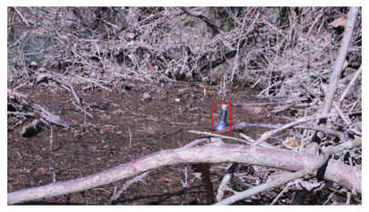

Litter is a known cause of degradation in marine environments and most of it travels in rivers before reaching the oceans. In this paper, we present a novel algorithm to assist waste monitoring along watercourses. While several attempts have been made to quantify litter using neural object detection in photographs of floating items, we tackle the more challenging task of counting directly in videos using boat-embedded cameras. We rely on multi-object tracking (MOT) but focus on the key pitfalls of false and redundant counts which arise in typical scenarios of poor detection performance. Our system only requires supervision at the image level and performs Bayesian filtering via a state space model based on optical flow. We present a new open image dataset gathered through a crowdsourced campaign and used to train a center-based anchor-free object detector. Realistic video footage assembled by water monitoring experts is annotated and provided for evaluation. Improvements in count quality are demonstrated against systems built from state-of-the-art multi-object trackers sharing the same detection capabilities. A precise error decomposition allows clear analysis and highlights the remaining challenges.
1 Introduction
Litter pollution concerns every part of the globe. Each year, almost ten thousand million tons of plastic waste is generated, among which 80% ends up in landfills or in nature (Geyer, Jambeck, and Law (2017)), notably threatening all of the world’s oceans, seas and aquatic environments (Welden (2020), Gamage and Senevirathna (2020)). Plastic pollution is known to already impact more than 3763 marine species worldwide (see this detailed analysis) with risk of proliferation through the whole food chain. This accumulation of waste is the endpoint of the largely misunderstood path of trash, mainly coming from land-based sources (Rochman et al. (2016)), yet rivers have been identified as a major pathway for the introduction of waste into marine environments (Jambeck et al. (2015)). Therefore, field data on rivers and monitoring are strongly needed to assess the impact of measures that can be taken. The analysis of such field data over time is pivotal to understand the efficiency of the actions implemented such as choosing zero-waste alternatives to plastic, designing new products to be long-lasting or reusable, introducing policies to reduce over-packing.
Different methods have already been tested to monitor waste in rivers: litter collection and sorting on riverbanks (Bruge et al. (2018)), visual counting of drifting litter from bridges (González-Fernández et al. (2021)), floating booms (Gasperi et al. (2014)), and nets (Morritt et al. (2014)). All are helpful to understand the origin and typology of litter pollution yet hardly compatible with long term monitoring at country scales. Monitoring tools need to be reliable, easy to set up on various types of rivers, and should give an overview of plastic pollution during peak discharge to help locate hotspots and provide trends. Newer studies suggest that plastic debris transport could be better understood by counting litter trapped on river banks, providing a good indication of the local macrolitter pollution especially after increased river discharge (Emmerik et al. (2019), Emmerik and Schwarz (2020)). Based on these findings, we propose a new method for litter monitoring which relies on videos of river banks directly captured from moving boats.
In this case, object detection with deep neural networks (DNNs) may be used, but new challenges arise. First, available data is still scarce. When considering entire portions of river banks from many different locations, the variety of scenes, viewing angles and/or light conditions is not well covered by existing plastic litter datasets like (Proença and Simões (2020)), where litter is usually captured from relatively close distances and many times in urban or domestic backgrounds. Therefore, achieving robust object detection across multiple conditions is still delicate.
Second, counting from videos is a different task than counting from independent images, because individual objects will typically appear in several consecutive frames, yet they must only be counted once. This last problem of association has been extensively studied for the multi-object tracking (MOT) task, which aims at recovering individual trajectories for objects in videos. When successful MOT is achieved, counting objects in videos is equivalent to counting the number of estimated trajectories. Deep learning has been increasingly used to improve MOT solutions (Ciaparrone et al. (2020)). However, newer state-of-the-art techniques require increasingly heavy and costly supervision, typically all object positions provided at every frame. In addition, many successful techniques (Bergmann, Meinhardt, and Leal-Taixe (2019)) can hardly be used in scenarios with abrupt and nonlinear camera motion. Finally, while research is still active to rigorously evaluate performance at multi-object tracking (Luiten et al. (2021)), most but not all aspects of the latter may affect global video counts, which calls for a separate evaluation protocol dedicated to multi-object counting.
Our contribution can be summarized as follows.
We provide a novel open-source image dataset of macro litter, which includes various objects seen from different rivers and different contexts. This dataset was produced with a new open-sourced platform for data gathering and annotation developed in conjunction with Surfrider Foundation Europe, continuously growing with more data.
We propose a new algorithm specifically tailored to count in videos with fast camera movements. In a nutshell, DNN-based object detection is paired with a robust state space movement model which uses optical flow to perform Bayesian filtering, while confidence regions built on posterior predictive distributions are used for data association. This framework does not require video annotations at training time: the multi-object tracking module does not require supervision, only the DNN-based object detection does require annotated images. It also fully leverages optical flow estimates and the uncertainty provided by Bayesian predictions to recover object identities even when detection recall is low. Contrary to existing MOT solutions, this method ensures that tracks are stable enough to avoid repeated counting of the same object.
We provide a set of video sequences where litter counts are known and depicted in real conditions. For these videos only, litter positions are manually annotated at every frame in order to carefully analyze performance. This allows us to build new informative count metrics. We compare the count performance of our method against other MOT-based alternatives.
A first visual illustration of the second claim is presented via the following code chunks: on three selected frames, we present a typical scenario where our strategy can avoid overcounting the same object (we depict internal workings of our solution against the end result of the competitors).
Hide/Show the code
import matplotlibimport matplotlib.pyplot as pltimport osimport pandas as pdfrom surfnet.prepare_data import download_datafrom surfnet.track import default_args as argsimport pickleimport numpy as npparams = {'legend.fontsize': 'xx-large','axes.labelsize': 'xx-large','axes.titlesize':'xx-large','xtick.labelsize':'xx-large','ytick.labelsize':'xx-large'}plt.rcParams.update(params)# download frames and detections from a given deep detector modeldownload_data()# prepare argumentsargs.external_detections =Trueargs.data_dir ='data/external_detections/part_1_segment_0'args.output_dir ='surfnet/results'args.noise_covariances_path ='surfnet/data/tracking_parameters'args.confidence_threshold =0.5args.algorithm ='EKF'args.ratio =4args.display =0from surfnet.tracking.utils import resize_external_detections, write_tracking_results_to_filefrom surfnet.tools.video_readers import FramesWithInfofrom surfnet.tracking.trackers import get_trackerfrom surfnet.track import track_video# Initialize variancestransition_variance = np.load(os.path.join(args.noise_covariances_path, 'transition_variance.npy'))observation_variance = np.load(os.path.join(args.noise_covariances_path, 'observation_variance.npy'))# Get tracker algorithmengine = get_tracker(args.algorithm)# Open data: detections and frameswithopen(os.path.join(args.data_dir, 'saved_detections.pickle'),'rb') as f: detections = pickle.load(f)withopen(os.path.join(args.data_dir, 'saved_frames.pickle'),'rb') as f: frames = pickle.load(f)# Create frame reader and resize detectionsreader = FramesWithInfo(frames)detections = resize_external_detections(detections, args.ratio)# Start tracking, storing intermediate trackletsresults, frame_to_trackers = track_video(reader, detections, args, engine, transition_variance, observation_variance, return_trackers=True)# Write final resultswrite_tracking_results_to_file(results, ratio_x=args.ratio, ratio_y=args.ratio, output_filename=args.output_dir)from surfnet.track import build_image_trackers# Choose a few indices to display (same for our algorithm and SORT)idxs = [108, 112, 117]considered_frames = [frames[i] for i in idxs]considered_trackers = [frame_to_trackers[i] for i in idxs]fig = build_image_trackers(considered_frames, considered_trackers, args, reader)
---Downloading: saved_detections.pickle
---Downloading: saved_frames.pickle
EKF will be used for tracking.
Tracking...
Tracking done.
Figure 1: Our method: one object (red dot) is correctly detected at every frame and given a consistent identity throughout the sequence with low location uncertainty (red ellipse). Next to it, a false positive detection is generated at the first frame (brown dot) but immediatly lost in the following frames: the associated uncertainty grows fast (brown ellipse). In our solution, this type of track will not be counted. A third correctly detected object (pink) appears in the third frame and begins a new track.
Hide/Show the code
## Tracker with SORT from collections import defaultdictimport cv2from sort.sort import track as sort_trackerprint('Tracking with SORT...')print('--- Begin SORT internal logs')sort_tracker(detections_dir='data/external_detections', output_dir='sort/results')print('--- End')def read_sort_output(filename):""" Reads the output .txt of Sort (or other tracking algorithm) """ dict_frames = defaultdict(list)withopen(filename) as f:for line in f: items = line[:-1].split(",") frame =int(items[0]) objnum =int(items[1]) x =float(items[2]) y =float(items[3]) dict_frames[int(items[0])].append((objnum, x, y))return dict_framesdef build_image(frames, trackers, image_shape=(135,240), downsampling=2*4):""" Builds a full image with consecutive frames and their displayed trackers frames: a list of K np.array trackers: a list of K trackers. Each tracker is a per frame list of tracked objects """ K =len(frames)assertlen(trackers) == K font = cv2.FONT_HERSHEY_COMPLEX output_img=np.zeros((image_shape[0], image_shape[1]*K, 3), dtype=np.uint8) object_ids = []for tracker in trackers:for detection in tracker: object_ids.append(detection[0]) min_object_id =min(object_ids)for i inrange(K): frame = cv2.cvtColor(cv2.resize(frames[i], image_shape[::-1]), cv2.COLOR_BGR2RGB)for detection in trackers[i]: cv2.putText(frame, f'{detection[0]-min_object_id +1}', (int(detection[1]/downsampling)+10, int(detection[2]/downsampling)+10), font, 0.5, (255, 0, 0), 1, cv2.LINE_AA) output_img[:,i*image_shape[1]:(i+1)*image_shape[1],:] = framereturn output_img
Tracking with SORT...
--- Begin SORT internal logs
Total Tracking took: 0.101 seconds for 360 frames or 3553.8 FPS
--- End
Hide/Show the code
# open sort outputtracker_file ="sort/results/part_1_segment_0.txt"frame_to_track = read_sort_output(tracker_file)condisered_frames = [frames[idx] for idx in idxs]considered_tracks = [frame_to_track[i] for i in idxs]out_img = build_image(condisered_frames, considered_tracks)plt.figure(figsize=(15,6))plt.imshow(out_img)plt.axis("off");plt.show()
Figure 2: SORT: the resulting count is also 2, but both counts arise from tracks generated by the same object, the latter not re-associated at all in the second frame. Additionally, the third object is discarded (in post-processing) by their strategy.
2 Related works
2.1 AI-automated counting
Counting from images has been an ongoing challenge in computer vision. Most works can be divided into (i) detection-based methods where objects are individually located for counting, (ii) density-based methods where counts are obtained by summing a predicted density map, and (iii) regression-based methods where counts are directly regressed from input images (Chattopadhyay et al. (2017)). While some of these works tackled the problem of counting in wild scenes (Arteta, Lempitsky, and Zisserman (2016)), most are focused on pedestrian and crowd counting. Though several works (Wu et al. (2020), Xiong, Shi, and Yeung (2017), Miao et al. (2019)) showed the relevance of leveraging sequential inter-frame information to achieve better counts at every frame, none of these methods actually attempt to produce global video counts.
2.2 Computer vision for macro litter monitoring
Automatic macro litter monitoring in rivers is still a relatively nascent initiative, yet there have already been several attempts at using DNN-based object recognition tools to count plastic trash. Recently, (Proença and Simões (2020)) used a combination of two Convolutional Neural Networks (CNNs) to detect and quantify plastic litter using geospatial images from Cambodia. In (Wolf et al. (2020)), reliable estimates of plastic density were obtained using Faster R-CNN (Ren et al. (2015)) on images extracted from bridge-mounted cameras. For underwater waste monitoring, (Lieshout et al. (2020)) assembled a dataset with bounding box annotations, and showed promising performance with several object detectors. They later turned to generative models to obtain more synthetic data from a small dataset @(Hong2020). While proving the practicality of deep learning for automatic waste detection in various contexts, these works only provide counts for separate images of photographed litter. To the best of our knowledge, no solution has been proposed to count litter directly in videos.
2.3 Multi-object tracking
Multi-object tracking usually involves object detection, data association and track management, with a very large number of methods already existing before DNNs (Luo et al. (2021)). MOT approaches now mostly differ in the level of supervision they require for each step: until recently, most successful methods (like Bewley et al. (2016) have been detection-based, i.e. involving only a DNN-based object detector trained at the image level and coupled with an unsupervised data association step. In specific fields such as pedestrian tracking or autonomous driving, vast datasets now provide precise object localisation and identities throughout entire videos (Caesar et al. (2020)) Dendorfer et al. (2020)). Current state-of-the-art methods leverage this supervision via deep visual feature extraction (Wojke, Bewley, and Paulus (2018), Zhang et al. (2021)) or even self-attention (Chu et al. (2021)) and graph neural networks (Wang, Kitani, and Weng (2021)). For these applications, motion prediction may be required, yet well-trained appearance models are usually enough to deal with detection failures under simple motion, therefore the linear constant-velocity assumption often prevails (Ciaparrone et al. (2020)).
In the case of macrolitter monitoring, however, available image datasets are still orders of magnitude smaller, and annotated video datasets do not exist at all. Even more so, real shooting conditions induce chaotic movements on the boat-embedded cameras. A close work of ours is that of (Fulton et al. (2019)), who paired Kalman filtering with optical flow to yield fruit count estimates on entire video sequences captured by moving robots. However, their video footage is captured at night with consistent lighting conditions, backgrounds are largely similar across sequences, and camera movements are less challenging. In our application context, we find that using MOT for the task of counting objects requires a new movement model, to take into account missing detections and large camera movements.
3 Datasets for training and evaluation
Our main dataset of annotated images is used to train the object detector. Then, only for evaluation purposes, we provide videos with annotated object positions and known global counts. Our motivation is to avoid relying on training data that requires this resource-consuming process.
3.1 Images
3.1.1 Data collection
With help from volunteers, we compile photographs of litter stranded on river banks after increased river discharge, shot directly from kayaks navigating at varying distances from the shore. Images span multiple rivers with various levels of water current, on different seasons, mostly in southwestern France. The resulting pictures depict trash items under the same conditions as the video footage we wish to count on, while spanning a wide variety of backgrounds, light conditions, viewing angles and picture quality.
3.1.2 Bounding box annotation
For object detection applications, the images are annotated using a custom online platform where each object is located using a bounding box. In this work, we focus only on litter counting without classification, however the annotated objects are already classified into specific categories which are described in Figure 4.
A few samples are depicted below:
Hide/Show the code
from PIL import Image, ExifTagsfrom pycocotools.coco import COCOdef draw_bbox(image, anns, ratio):""" Display the specified annotations. """for ann in anns: [bbox_x, bbox_y, bbox_w, bbox_h] = (ratio*np.array(ann['bbox'])).astype(int) cv2.rectangle(image, (bbox_x,bbox_y),(bbox_x+bbox_w,bbox_y+bbox_h), color=(0,0,255),thickness=3)return imagedir='surfnet/data/images'ann_dir = os.path.join(dir,'annotations')data_dir = os.path.join(dir,'images')ann_file = os.path.join(ann_dir, 'subset_of_annotations.json')coco = COCO(ann_file)imgIds = np.array(coco.getImgIds())print('{} images loaded'.format(len(imgIds)))for imgId in imgIds: plt.figure() image = coco.loadImgs(ids=[imgId])[0]try: image = Image.open(os.path.join(data_dir,image['file_name']))# Rotation of the picture in the Exif tagsfor orientation in ExifTags.TAGS.keys():if ExifTags.TAGS[orientation]=='Orientation':break exif = image._getexif()if exif isnotNone:if exif[orientation] ==3: image=image.rotate(180, expand=True)elif exif[orientation] ==6: image=image.rotate(270, expand=True)elif exif[orientation] ==8: image=image.rotate(90, expand=True)except (AttributeError, KeyError, IndexError):# cases: image don't have getexifpass image = cv2.cvtColor(np.array(image.convert('RGB')), cv2.COLOR_RGB2BGR) annIds = coco.getAnnIds(imgIds=[imgId]) anns = coco.loadAnns(ids=annIds) h,w = image.shape[:-1] target_h =1080 ratio = target_h/h target_w =int(ratio*w) image = cv2.resize(image,(target_w,target_h)) image = draw_bbox(image,anns,ratio) image = cv2.cvtColor(image,cv2.COLOR_BGR2RGB) plt.imshow(image) plt.axis('off')
loading annotations into memory...
Done (t=0.00s)
creating index...
index created!
15 images loaded

3.2 Video sequences
3.2.1 Data collection
For evaluation, an on-field study was conducted with 20 volunteers to manually count litter along three different riverbank sections in April 2021, on the Gave d’Oloron near Auterrive (Pyrénées-Atlantiques, France), using kayaks. The river sections, each 500 meters long, were precisely defined for their differences in background, vegetation, river current, light conditions and accessibility (see Section 8.2 for aerial views of the shooting site and details on the river sections). In total, the three videos amount to 20 minutes of footage at 24 frames per second (fps) and a resolution of 1920x1080 pixels.
3.2.2 Track annotation
On video footage, we manually recovered all visible object trajectories on each river section using an online video annotation tool (more details in Section 8.2 for the precise methodology). From that, we obtained a collection of distinct object tracks spanning the entire footage.
4 Optical flow-based counting via Bayesian filtering and confidence regions
Our counting method is divided into several interacting blocks. First, a detector outputs a set of predicted positions for objects in the current frame. The second block is a tracking module designing consistent trajectories of potential objects within the video. At each frame, a third block links the successive detections together using confidence regions provided by the tracking module, proposing distinct tracks for each object. A final postprocessing step only keeps the best tracks which are enumerated to yield the final count.
4.1 Detector
4.1.1 Center-based anchor-free detection
In most benchmarks, the prediction quality of object attributes like bounding boxes is often used to improve tracking. For counting, however, point detection is theoretically enough and advantageous in many ways. First, to build large datasets, a method which only requires the lightest annotation format may benefit from more data due to annotation ease. Second, contrary to previous popular methods (Ren et al. (2015)) involving intricate mechanisms for bounding box prediction, center-based and anchor-free detectors (Zhou, Wang, and Krähenbühl (2019), Law and Deng (2018)) only use additional regression heads which can simply be removed for point detection. Adding to all this, (Zhang et al. (2021)) highlight conceptual and experimental reasons to favor anchor-free detection in tracking-related tasks.
For these reasons, we use a stripped version of CenterNet (Zhou, Wang, and Krähenbühl (2019)) where offset and bounding box regression heads are discarded to output bare estimates of center positions on a coarse grid. An encoder-decoder network takes an input image I \in [0,1]^{w \times h \times 3} (an RGB image of width w and height h), and produces a heatmap \hat{Y} \in [0,1]^{\lfloor
w/p\rfloor \times \lfloor h/p\rfloor} such that \hat{Y}_{xy} is the probability that (x,y) is the center of an object (p being a stride coefficient). At inference, peak detection and thresholding are applied to \hat{Y}, yielding the set of detections. The bulk of this detector relies on the DLA34 architecture (Yu et al. (2018)). In a video, for each frame I_n \in
[0,1]^{w \times h \times 3} (where n indexes the frame number), the detector outputs a set \mathcal{D}_n = \{z_n^i\}_{1 \leq i \leq D_n} where each z_n^i = (x_n^i,y_n^i) specifies the coordinates of one of the D_n detected objects.
4.2 Training
Training the detector is done similarly as in Proença and Simões (2020).
For every image, the corresponding set \mathcal{B} =
\{(c^w_i,c^h_i,w_i,h_i)\}_{1 \leq i\leq B} of B annotated bounding boxes – i.e. a center (c^w_i,c^h_i), a width w_i and a height h_i– is rendered into a ground truth heatmap Y \in [0,1]^{{\lfloor w/p\rfloor \times
\lfloor h/p\rfloor}} by applying kernels at the bounding box centers and taking element-wise maximum. For all 1 \leq x \leq w/p, 1 \leq y \leq h/p, the ground truth at (x,y) is
Between two timesteps n-1 and n, the optical flow \Delta_n is a mapping satisfying the following consistency constraint (Paragios, Chen, and Faugeras (2006)):
where, in our case, \widetilde{I}_n denotes the frame n downsampled to dimensions \lfloor w/p\rfloor \times \lfloor h/p\rfloor and u = (x,y) is a coordinate on that grid. To estimate \Delta_n, we choose a simple unsupervised Gunner-Farneback algorithm which does not require further annotations, see Farnebäck (2003) for details.
4.3.2 State space model
Using optical flow as a building block, we posit a state space model where estimates of \Delta_n are used as a time and state-dependent offset for the state transition.
Let (X_k)_{k \geq 1} and (Z_k)_{k \geq 1} be the true (but hidden) and observed (detected) positions of a target object in \mathbb{R}^2, respectively.
Considering the optical flow value associated with X_{k-1} on the discrete grid of dimensions \lfloor w/p\rfloor \times \lfloor h/p\rfloor, write
where (\eta_k)_{k\geq 1} are i.i.d. centered Gaussian random variables with covariance matrix Q independent of (\varepsilon_k)_{k\geq 1} i.i.d. centered Gaussian random variables with covariance matrix R. In the following, Q and R are assumed to be diagonal, and are hyperparameters set to values given in Section 8.3.1.
4.3.3 Approximations of the filtering distributions
Denoting u_{1:k} = (u_1,\ldots,u_k) for any k and sequence (u_i)_{i \geq
0}, Bayesian filtering aims at computing the conditional distribution of X_k given Z_{1:k}, referred to as the filtering distribution. In the case of linear and Gaussian state space models, this distribution is known to be Gaussian, and Kalman filtering allows to update exactly the posterior mean \mu_k = \mathbb{E}[X_k|Z_{1:k}] and posterior variance matrix \Sigma_k =
\mathbb{V}[X_k|Z_{1:k}]. This algorithm and its extensions are prevalent and used extensively in time-series and sequential-data analysis. As the transition model proposed in Equation 1 is nonlinear, Kalman updates cannot be implemented and solving the target tracking task requires resorting to alternatives. Many solutions have been proposed to deal with strong nonlinearities in the literature, such as unscented Kalman filters (UKF) or Sequential Monte Carlo (SMC) methods (see Särkkä (2013) and references therein). Most SMC methods have been widely studied and shown to be very effective even in presence of strongly nonlinear dynamics and/or non-Gaussian noise, however such sample-based solutions are computationally intensive, especially in settings where many objects have to be tracked and false positive detections involve unnecessary sampling steps. On the other hand, UKF requires fewer samples and provides an intermediary solution in presence of mild nonlinearities. In our setting, we find that a linearisation of the model Equation 1 yields approximation which is computationally cheap and as robust on our data:
X_k = X_{k-1} + \Delta_k(\lfloor \mu_{k-1} \rfloor) + \partial_X\Delta_k(\lfloor \mu_{k-1} \rfloor)(X_{k-1}-\mu_{k-1}) + \eta_k .
where \partial_X is the derivative operator with respect to the 2-dimensional spatial input X.
This allows the implementation of Kalman updates on the linearised model, a technique named extended Kalman filtering (EKF). For a more complete presentation of Bayesian and Kalman filtering, please refer to Section 8.4. On the currently available data, we find that the optical flow estimates are very informative and accurate, making this approximation sufficient. For completeness, we present Section 8.5.1 an SMC-based solution and discuss the empirical differences and use-cases where the latter might be a more relevant choice.
In any case, the state space model naturally accounts for missing observations, as the contribution of \Delta_k in every transition ensures that each filter can cope with arbitrary inter-frame motion to keep track of its target.
4.3.4 Generating potential object tracks
The full MOT algorithm consists of a set of single-object trackers following the previous model, but each provided with distinct observations at every frame. These separate filters provide track proposals for every object detected in the video.
4.4 Data association using confidence regions
Throughout the video, depending on various conditions on the incoming detections, existing trackers must be updated (with or without a new observation) and others might need to be created. This setup requires a third party data association block to link the incoming detections with the correct filters.
At the frame n, a set of L_n Bayesian filters track previously seen objects and a new set of detections \mathcal{D}_n is provided by the detector. Denote by 1 \leq \ell \leq L_n the index of each filter at time n, and by convention write Z^\ell_{1:n-1} the previous observed positions associated with index \ell (even if no observation is available at some past times for that object). Let \rho \in (0,1) be a confidence level.
For every detected object z_n^i \in \mathcal{D}_n and every filter \ell, compute P(i,\ell) = \mathbb{P}(Z_n^\ell \in V_\delta(z_n^i)\mid
Z^\ell_{1:n-1}) where V_\delta(z) is the neighborhood of z defined as the squared area of width 2\delta centered on z (see Section 8.5 for exact computations).
Using the Hungarian algorithm (Kuhn (1955)), compute the assignment between detections and filters with P as cost function, but discarding associations (i,\ell) having P(i,\ell) < \rho. Formally, \rho represents the level of a confidence region centered on detections and we use \rho = 0.5. Denote a_{\rho} the resulting assignment map defined as a_{\rho}(i) = \ell if z_n^i was associated with the \ell-th filter, and a_{\rho}(i) = 0 if z_n^i was not associated with any filter.
For 1 \leq i \leq D_n, if a_{\rho}(i) = \ell, use z_n^i as a new observation to update the \ell-th filter. If a_{\rho}(i) = 0, create a new filter initialized from the prior distribution, i.e. sample the true location as a Gaussian random variable with mean z_n^i and variance R.
For all filters \ell' which were not provided a new observation, update only the predictive law of X^{\ell'}_{n} given Z^{\ell'}_{1:n-1}.
In other words, we seek to associate filters and detections by maximising a global cost built from the predictive distributions of the available filters, but an association is only valid if its corresponding predictive probability is high enough. Though the Hungarian algorithm is a very popular algorithm in MOT, it is often used with the Euclidean distance or an Intersection-over-Union (IoU) criterion. Using confidence regions for the distributions of Z_n given Z_{1:(n - 1)} instead allows to naturally include uncertainty in the decision process. Note that we deactivate filters whose posterior mean estimates lie outside the image subspace in \mathbb{R}^2.
A visual depiction of the entire pipeline (from detection to final association) is provided below. This way of combining a set of Bayesian filters with a data association step that resorts on the most likely hypothesis is a form of Global Nearest Neighbor (GNN) tracking. Another possibility is to perform multi-target filtering by including the data association step directly into the probabilistic model, as in Mahler (2003). A generalisation of single-target recursive Bayesian filtering, this class of methods is grounded in the point process literature and well motivated theoretically. In case of strong false positive detection rates, close and/or reappearing objects, practical benefits may be obtained from these solutions. Finally, note that another well-motivated choice for P(i,\ell) could be to use the marginal likelihood \mathbb{P}(Z_n^\ell \in
V_\delta(z_n^i)), which is standard in modern MOT.
Figure 3: Visual representation of the tracking pipeline.
4.5 Counting
At the end of the video, the previous process returns a set of candidate tracks. For counting purposes, we find that simple heuristics can be further applied to filter out tracks that do not follow actual objects. More precisely, we observe that tracks of real objects usually contain more (i) observations and (ii) streams of uninterrupted observations. Denote by T_\ell
= \left\{n \in \mathbb{N} \mid \exists z \in \mathcal{D}_n, Z_n^{\ell} =
z\right\} all timesteps where the \ell-th object is observed. To discard false counts according to (i) and (ii), we compute the moving average M_\ell^\kappa of 1_{T_\ell} using windows of size \kappa, i.e. the sequence defined by M_\ell^\kappa[n] = \frac{1}{\kappa} \sum_{k \in [\![n -
\kappa, n + \kappa]\!]} 1_{T_\ell}[k]. We then build T_\ell^\kappa =
\left\{n \in T_\ell \mid M_\ell^\kappa[n] > \nu\right\}, and defining \mathcal{N} = \left\{\ell \mid |T_\ell^\kappa| > \tau\right\}, the final object count is |\mathcal{N}|. We choose \nu = 0.6 while \kappa,\tau are optimized for best count performance (see Section 8.3.2 for a more comprehensive study).
5 Metrics for MOT-based counting
Counting in videos using embedded moving cameras is not a common task, and as such it requires a specific evaluation protocol to understand and compare the performance of competing methods. First, not all MOT metrics are relevant, even if some do provide insights to assist evaluation of count performance. Second, considering only raw counts on long videos gives little information on which of the final counts effectively arise from well detected objects.
5.1 Count-related MOT metrics
Popular MOT benchmarks usually report several sets of metrics such as ClearMOT (Bernardin and Stiefelhagen (2008)) or IDF1 (Ristani et al. (2016)) which can account for different components of tracking performance. Recently, (Luiten et al. (2021)) built the so-called HOTA metrics that allow separate evaluation of detection and association using the Jaccard index. The following components of their work are relevant to our task (we provide equation numbers in the original paper for formal definitions).
5.1.1 Detection
First, when considering all frames independently, traditional detection recall (\mathsf{DetRe}) and precision (\mathsf{DetPr}) can be computed to assess the capabilities of the object detector. Denoting with \mathsf{TP}_n, \mathsf{FP}_n, \mathsf{FN}_n the number of true positive, false positive and false negative detections at frame n, respectively, we define \mathsf{TP} = \sum_n \mathsf{TP}_n, \mathsf{FP} = \sum_n \mathsf{FP}_n and \mathsf{FN} =
\sum_n \mathsf{FN}_n, then:
In classical object detection, those metrics are the main target. In our context, as the first step of the system, this framewise performance impacts the difficulty of counting. However, we must keep in mind that these metrics are computed framewise and might not guarantee anything at a video scale. The next points illustrate that remark.
If both \mathsf{DetRe} and \mathsf{DetPr} are very high, objects are detected at nearly all frames and most detections come from actual objects. Therefore, robustness to missing observations is high, but even in this context computing associations may fail if camera movements are nontrivial.
For an ideal tracking algorithm which never counts individual objects twice and does not confuse separate objects in a video, a detector capturing each object for only one frame could theoretically be used. Thus, low \mathsf{DetRe} could theoretically be compensated with robust tracking.
If our approach can rule out faulty tracks which do not follow actual objects, then good counts can still be obtained using a detector generating many false positives. Again, this suggests that low \mathsf{DetPr} may allow decent counting performance.
5.1.2 Association
HOTA association metrics are built to measure tracking performance irrespective of the detection capabilities, by comparing predicted tracks against true object trajectories. In our experiments, we compute the Association Recall (\mathsf{AssRe}) and the Association Precision (\mathsf{AssPr}). Several intermediate quantities are necessary to introduce these final metrics. Following Luiten et al. (2021), we denote with \mathsf{prID} the ID of a predicted track and \mathsf{gtID} the ID of a ground truth track. Given C all couples of \mathsf{prID}-\mathsf{gtID} found among the true positive detections, and c \in C one of these couples, \mathsf{TPA}(c) is the number of frames where \mathsf{prID} is also associated with \mathsf{gtID}, \mathsf{FPA}(c) is the number of frames where \mathsf{prID} is associated with another ground truth ID or with no ground truth ID, and \mathsf{FNA}(c) is the number of frames where \mathsf{gtID} is associated with another predicted ID or with no predicted ID. Then:
See Luiten et al. (2021) (fig. 2) for a clear illustration of these quantities.
In brief, a low \mathsf{AssPr} implies that several objects are often mingled into only one track, resulting in undercount. A low \mathsf{AssRe} implies that single objects are often associated with multiple tracks. If no method is used to discard redundant tracks this results in overcount. Conversely, association precision (\mathsf{AssPr}) measures how exclusive tracks are to each object (it decreases whenever a track covers multiple objects). Again, it is useful to reconsider and illustrate the meaning of these metrics in the context of MOT-based counting. Litter items are typically well separated on river banks, thus predicted tracks are not expected to interfere much. This suggests that reaching high \mathsf{AssPr} on our footage is not challenging. Contrarily, \mathsf{AssRe} is a direct measurement of the capability of the tracker to avoid producing multiple tracks despite missing detections and challenging motion. A high \mathsf{AssRe} therefore typically avoids multiple counts for the same object, which is a key aspect of our work.
Nonetheless, association metrics are only computed for predicted tracks which can effectively be matched with ground truth tracks. Consequently, \mathsf{AssRe} does not account for tracks predicted from streams of false positive detections generated by the detector (e.g. arising from rocks, water reflections, etc). Since such tracks induce false counts, a tracker which produces the fewest is better, but MOT metrics do not measure it.
5.2 Count metrics
Denoting by \mathsf{\hat{N}} and \mathsf{N} the respective predicted and ground truth counts for the validation material, the error \mathsf{\hat{N}} - \mathsf{N} is misleading as no information is provided on the quality of the predicted counts. Additionally, results on the original validation footage do not measure the statistical variability of the proposed estimators.
5.2.1 Count decomposition
Define i \in [\![1, \mathsf{N}]\!] and j \in [\![1, \mathsf{\hat{N}}]\!] the labels of the annotated ground truth tracks and the predicted tracks, respectively. At evaluation, we assign each predicted track to either none or at most one ground truth track, writing j \rightarrow \emptyset or j \rightarrow i for the corresponding assignments. The association is made whenever a predicted track i overlaps with a ground truth track j at any frame, i.e. for a given frame a detection in i is within a threshold \alpha of an object in j. We compute metrics for 20 values of \alpha \in [0.05 \alpha_{max}, 0.95
\alpha_{max}], with \alpha_{max} = 0.1 \sqrt{w^2 + h^2}, then average the results, which is the default method in HOTA to combine results at different thresholds. We keep this default solution, in particular because our results are very consistent accross different thresholds in that range (we only observe a slight decrease in performance for \alpha = \alpha_{max}, where occasional false detections probably start to lie below the threshold).
Denote A_i = \{j \in [\![1, \mathsf{\hat{N}}]\!] \mid j \rightarrow i\} the set of predicted tracks assigned to the i-th ground truth track. We define:
\mathsf{\hat{N}_{true}} = \sum_{i=1}^{\mathsf{N}} 1_{|A_i| > 0} the number of ground truth objects successfully counted.
\mathsf{\hat{N}_{red}} = \sum_{i=1}^{\mathsf{N}} |A_i| - \mathsf{\hat{N}_{true}} the number of redundant counts per ground truth object.
\mathsf{\hat{N}_{mis}} = \mathsf{N} - \mathsf{\hat{N}_{true}} the number of ground truth objects that are never effectively counted.
\mathsf{\hat{N}_{false}} = \sum_{j=1}^{\mathsf{\hat{N}}} 1_{j \rightarrow \emptyset} the number of counts which cannot be associated with any ground truth object and are therefore considered as false counts.
Using these metrics provides a much better understanding of \mathsf{\hat{N}} as
\mathsf{\hat{N}} = \mathsf{\hat{N}_{true}} + \mathsf{\hat{N}_{red}} + \mathsf{\hat{N}_{false}},
while \mathsf{\hat{N}_{mis}} completely summarises the number of undetected objects.
Conveniently, the quantities can be used to define the count precision (\mathsf{CountPR}) and count recall (\mathsf{CountRe}) as follows:
which provide good summaries for the overall count quality, letting aside the tracking performance.
Note that these metrics and the associated decomposition are only defined if the previous assignment between predicted and ground truth tracks can be obtained. In our case, predicted tracks never overlap with several ground truth tracks (because true objects are well separated), and therefore this assignment is straightforward. More involved metrics have been studied at the trajectory level (see for example García-Fernández, Rahmathullah, and Svensson (2020) and the references therein), though not specifically tailored to the restricted task of counting. For more complicated data, an adaptation of such contributions into proper counting metrics could be valuable.
5.2.2 Statistics
Since the original validation set comprises only a few unequally long videos, only absolute results are available. Splitting the original sequences into shorter independent sequences of equal length allows to compute basic statistics. For any quantity \mathsf{\hat{N}}_\bullet defined above, we provide \hat{\sigma}_{\mathsf{\hat{N}}_\bullet} the associated empirical standard deviations computed on the set of short sequences.
6 Experiments
We denote by S_1, S_2 and S_3 the three river sections of the evaluation material and split the associated footage into independent segments of 30 seconds. We further divide this material into two distinct validation (6min30) and test (7min) splits.
To demonstrate the benefits of our work, we select two multi-object trackers and build competing counting systems from them. Our first choice is SORT Bewley et al. (2016), which relies on Kalman filtering with velocity updated using the latest past estimates of object positions. Similar to our system, it only relies on image supervision for training, and though DeepSORT (Wojke, Bewley, and Paulus (2018)) is a more recent alternative with better performance, the associated deep appearance network cannot be used without additional video annotations. FairMOT (Zhang et al. (2021)), a more recent alternative, is similarly intended for use with video supervision but allows self-supervised training using only an image dataset. Built as a new baseline for MOT, it combines linear constant-velocity Kalman filtering with visual features computed by an additional network branch and extracted at the position of the estimated object centers, as introduced in CenterTrack (Zhou, Koltun, and Krähenbühl (2020)). We choose FairMOT to compare our method to a solution based on deep visual feature extraction.
Similar to our work, FairMOT uses CenterNet for the detection part and the latter is therefore trained as in Section 4.2. We train it using hyperparameters from the original paper. The detection outputs are then shared between all counting methods, allowing fair comparison of counting performance given a fixed object detector. We run all experiments at 12fps, an intermediate framerate to capture all objects while reducing the computational burden.
6.1 Detection
In the following section, we present the performance of the trained detector. Having annotated all frames of the evaluation videos, we directly compute \mathsf{DetRe} and \mathsf{DetPr} on those instead of a test split of the image dataset used for training. This allows realistic assessment of the detection quality of our system on true videos that may include blurry frames or artifacts caused by strong motion. We observe low \mathsf{DetRe}, suggesting that objects are only captured on a fraction of the frames they appear on. To better focus on count performance in the next sections, we remove segments that do not generate any correct detection: performance on the remaining footage is increased and given by \mathsf{DetRe}^{*} and \mathsf{DetPr}^{*}.
To fairly compare the three solutions, we calibrate the hyperparameters of our postprocessing block on the validation split and keep the values that minimize the overall count error \mathsf{\hat{N}} for each of them separately (see Section 8.3.2 for more information). All methods are found to work optimally at \kappa = 7, but our solution requires \tau = 8 instead of \tau = 9 for other solutions: this lower level of thresholding suggests that raw output of our tracking system is more reliable.
We report results using the count-related tracking metrics and count decompositions defined in the previous section. To provide a clear but thorough summary of the performance, we report \mathsf{AssRe}, \mathsf{CountRe} and \mathsf{CountPR} as tabled values (the first gives a simple overview of the quality of the predicted tacks while the latter two concisely summarise the count performance). For a more detailed visualisation of the different types of errors, we plot the count error decomposition for all sequences in a separate graph. Note that across all videos and all methods, we find \mathsf{AssPr} between 98.6 and 99.2 which shows that this application context is unconcerned with tracks spanning multiple ground truth objects, therefore we do not conduct a more detailed interpretation of \mathsf{AssPr} values.
First, the higher values of AssRe confirm the robustness of our solution in assigning consistent tracks to individual objects. This is directly reflected into the count precision performance - with an overall value of \mathsf{CountPR} 17.6 points higher than the next best method (SORT) - or even more so in the complete disappearance of orange (redundant) counts in the graph. A key aspect is that these improvements are not counteracted by a lower \mathsf{CountRe}: on the contrary, our tracker, which is more stable, also captures more object (albeit still missing most of them, with a \mathsf{CountRe} below 50%). Note finally, that the strongest improvements are obtained for sequence 2 which is also the part with the strongest motion.
We successfully tackled video object counting on river banks, in particular issues which could be addressed independently of detection quality. Moreover the methodology developed to assess count quality enables us to precisely highlight the challenges that pertain to video object counting on river banks. Conducted in coordination with Surfrider Foundation Europe, an NGO specialized on water preservation, our work marks an important milestone in a broader campaign for macrolitter monitoring and is already being used in a production version of a monitoring system. That said, large amounts of litter items are still not detected. Solving this problem is largely a question of augmenting the object detector training dataset through crowdsourced images. A specific annotation platform is online, thus the amount of annotated images is expected to continuously increase, while training is provided to volunteers collecting data on the field to ensure data quality. Finally, several expeditions on different rivers are already underway and new video footage is expected to be annotated in the near future for better evaluation. All data is made freely available. Future goals include downsizing the algorithm, a possibility given the architectural simplicity of anchor-free detection and the relatively low computational complexity of EKF. In a citizen science perspective, a fully embedded version for portable devices will allow a larger deployment. The resulting field data will help better understand litter origin, allowing to model and predict litter density in non surveyed areas. Correlations between macro litter density and environmental parameters will be studied (e.g., population density, catchment size, land use and hydromorphology). Finally, our work naturally benefits any extension of macrolitter monitoring in other areas (urban, coastal, etc) that may rely on a similar setup of moving cameras.
8 Supplements
8.1 Details on the image dataset
8.1.1 Categories
In this work, we do not seek to precisely predict the proportions of the different types of counted litter. However, we build our dataset to allow classification tasks. Though litter classifications built by experts already exist, most are based on semantic rather than visual features and do not particularly consider the problem of class imbalance, which makes statistical learning more delicate. In conjunction with water pollution experts, we therefore define a custom macrolitter taxonomy which balances annotation ease and pragmatic decisions for computer vision applications. This classification, depicted in Figure 4 can be understood as follows.
We define a set of frequently observed classes that annotateors can choose from, divided into:
Classes for rigid and easily recognisable items which are often observed and have definite shapes
Classes for fragmented objects which are often found along river banks but whose aspects are more varied
We define two supplementary categories used whenever the annotater cannot classify the item they are observing in an image using classes given in 1.
A first category is used whenever the item is clearly identifiable but its class is not proposed. This will ensure that our classification can be improved in the future, as images with items in this category will be checked regularly to decide whether a new class needs to be created.
Another category is used whenever the annotater does not understand the item they are seeing. Images containing items denoted as such will not be used for applications involving classification.
Figure 4: Trash categories defined to facilitate porting to a counting system that allows trash identification
8.2 Details on the evaluation videos
8.2.1 River segments
In this section, we provide further details on the evaluation material. Figure 5 shows the setup and positioning of the three river segments S_1, S_2 and S_3 used to evaluate the methods. The segments differ in the following aspects.
Segment 1: Medium current, high and dense vegetation not obstructing vision of the right riverbank from watercrafts, extra objects installed before the field experiment.
Segment 2: High current, low and dense vegetation obstructing vision of the right riverbank from watercrafts.
Segment 3: Medium current, high and little vegetation not obstructing vision of the left riverbank from watercrafts.
Figure 5: Aerial view of the three river segments of the evaluation material
8.2.1.1 Track annotation protocol
To annotate tracks on the evaluation sequences, we used the online tool “CVAT” which allows to locate bounding boxes on video frames and propagate them in time. The following items provide further details on the exact annotation process.
Object tracks start whenever a litter item becomes fully visible and identifiable by the naked eye.
Positions and sizes of objects are given at nearly every second of the video with automatic interpolation for frames in-between: this yields clean tracks with precise positions at 24fps.
We do not provide inferred locations when an object is fully occluded, but tracks restart with the same identity whenever the object becomes visible again.
Tracks stop whenever an object becomes indistinguishable and will not reappear again.
8.3 Implementation details for the tracking module
8.3.1 Covariance matrices for state and observation noises
In our state space model, Q models the noise associated with the movement model we posit in Section 4.3 involving optical flow estimates, while R models the noise associated with the observation of the true position via our object detector. An attempt to estimate the diagonal values of these matrices was the following.
To estimate R, we computed a mean L_2 error between the known positions of objects and the associated predictions by the object detector, for images in our training dataset.
To estimate Q, we built a small synthetic dataset of consecutive frames taken from videos, where positions of objects in two consecutive frames are known. We computed a mean L_2 error between the known positions in the second frame and the positions estimated by shifting the positions in the first frame with the estimated optical flow values.
This led to R_{00} = R_{11} = 1.1, Q_{00} = 4.7 and Q_{11} = 0.9, for grids of dimensions \lfloor w/p\rfloor \times \lfloor h/p\rfloor = 480 \times 270. All other coefficients were not estimated and supposed to be 0.
An important remark is that though we use these values in practice, we found that tracking results are largely unaffected by small variations of R and Q. As long as values are meaningful relative to the image dimensions and the size of the objects, most noise levels show relatively similar performance.
8.3.2 Influence of \tau and \kappa
An understanding of \kappa, \tau and \nu can be stated as follows. For any track, given a value for \kappa and \nu, an observation at time n is only kept if there are also \nu \cdot \kappa observations in the temporal window of size \kappa that surrounds n (windows are centered around n except at the start and end of the track). The track is only counted if the remaining number of observations is strictly higher than \tau. At a given \nu > 0.5, \kappa and \tau should ideally be chosen to jointly decrease \mathsf{\hat{N}_{false}} and \mathsf{\hat{N}_{red}} as much as possible without increasing \mathsf{\hat{N}_{mis}} (true objects become uncounted if tracks are discarded too easily).
In the following code cell, we plot the error decomposition of the counts for several values of \kappa and \tau with \nu=0.6 for the outputs of the three different trackers. We choose \nu = 0.7 and compute the optimal point as the one which minimizes the overall count error \mathsf{\hat{N}} (= \mathsf{\hat{N}_{mis}} + \mathsf{\hat{N}_{red}} + \mathsf{\hat{N}_{false}}).
Best parameters for FairMOT: (kappa, tau) = (7, 9)
Best parameters for SORT: (kappa, tau) = (7, 9)
Best parameters for Ours: (kappa, tau) = (7, 8)
8.4 Bayesian filtering
Considering a state space model with (X_k, Z_k)_{k \geq 0} the random processes for the states and observations, respectively, the filtering recursions are given by:
The predict step: p(x_{k+1}|z_{1:k}) = \int p(x_{k+1}|x_k)p(x_k|z_{1:k})\mathrm{d}x_k.
The update step: p(x_{k+1}|z_{1:k+1}) \propto p(z_{k+1} | x_{k+1})p(x_{k+1}|z_{1:k}).
The recursions are intractable in most cases, but when the model is linear and Gaussian, i.e. such that:
with \eta_k \sim \mathcal{N}(0,Q_k) and \epsilon_k \sim \mathcal{N}(0,R_k), then the distribution of X_k given Z_{1:k} is a Gaussian \mathcal{N}(\mu_k,\Sigma_k) following:
\mu_{k} = \mu_{k|k-1} + K_k\left[Z_k - (B_k\mu_{k|k-1} + b_k)\right] and \Sigma_{k} = (I - K_kB_k)\Sigma_{k|k-1} (Kalman update step),
where K_k = \Sigma_{k|k-1}B_k^T(B_k \Sigma_{k|k-1} B_k^T + R_k)^{-1}.
In the case of the linearized model in Section 4.3.2, EKF consists in applying these updates with:
A_k = (I + \partial_X\Delta_k(\lfloor \mu_{k-1} \rfloor),a_k = \Delta_k(\lfloor \mu_{k-1} \rfloor) - \partial_X\Delta_k(\lfloor \mu_{k-1} \rfloor)\mu_{k-1},Q_k = Q, R_k = R,B_k = I, b_k = 0.
8.5 Computing the confidence regions
In words, P(i,\ell) is the mass in V_\delta(z_n^i) \subset \mathbb{R}^2 of the probability distribution of Z_n^\ell given Z_{1:n-1}^\ell. It is related to the filtering distribution at the previous timestep via
When using EKF, this distribution is a multivariate Gaussian whose moments can be analytically obtained from the filtering mean and variance and the parameters of the linear model, i.e.
following the previously introduced notation. Note that given the values of A_k, B_k, a_k, b_k in our model these equations are simplified in practice, e.g. B_k = I, b_k = 0 and A_k \mu_{k-1} + a_k = \mu_{k-1} + \Delta_k(\lfloor \mu_{k-1} \rfloor).
In \mathbb{R}^2, values of the cumulative distribution function (cdf) of a multivariate Gaussian distribution are easy to compute. Denote with F_n^\ell the cdf of \mathbb{L}_n^\ell. If V_\delta(z) is a squared neighborhood of size \delta and centered on z=(x,y) \in \mathbb{R}^2, then, denoting with \mathbb{L}_n^\ell the distribution of Z_n^\ell given Z_{1:n-1}^\ell:
This allows easy computation of P(i,\ell) = \mathbb{L}_n^\ell(V_\delta(z_n^i)).
8.5.1 Impact of the filtering algorithm
An advantage of the data association method proposed in Section 4.4 is that it is very generic and does not constrain the tracking solution to any particular choice of filtering algorithm. As for EKF, UKF implementations are already available to compute the distribution of Z_k given Z_{1:k-1} and the corresponding confidence regions (see Section 8.3 above). We propose a solution to compute this distribution when SMC is used, and performance comparisons between the EKF, UKF and SMC versions of our trackers are discussed.
8.5.2 SMC-based tracking
Denote \mathbb{Q}_k the filtering distribution (ie. that of Z_k given X_{1:k}) for the HMM (X_k,Z_k)_{k \geq 1} (omitting the dependency on the observations for notation ease). Using a set of samples \{X_k^i\}_{1 \leq i \leq N} and importance weights \{w_k^i\}_{1 \leq i \leq N}, SMC methods build an approximation of the following form:
\widehat{\mathbb{Q}}^{SMC}_k(\mathrm{d} x_k) = \sum_{i=1}^N w_k^i \delta_{X_k^i}(\mathrm{d} x_k) \,.
Contrary to EKF and UKF, the distribution \mathbb{L}_k of Z_k given Z_{1:k-1} is not directly available but can be obtained via an additional Monte Carlo sampling step. Marginalizing over (X_{k-1}, X_k) and using the conditional independence properties of HMMs, we decompose \mathbb{L}_k using the conditional state transition \mathbb{M}_k(x,\mathrm{d} x') and the likelihood of Z_k given X_k, denoted by \mathbb{G}_k(x, \mathrm{d} z):
In our model, the state transition is Gaussian and therefore easy to sample from. Thus an approximated predictive distribution \widehat{\mathbb{L}}_k can be obtained using Monte Carlo estimates built from random samples \{X_k^{i,j}\}_{1 \leq i \leq N}^{1 \leq j \leq M} drawn from \mathbb{M}_k(X_{k-1}^i, \mathrm{d} x_k). This leads to
Since the observation likelihood is also Gaussian, \widehat{\mathbb{L}}_k is a Gaussian mixture, thus values of \widehat{\mathbb{L}}_k(\mathsf{A}) for any \mathsf{A} \subset \mathbb{R}^2 can be computed by applying the tools from Section 8.5 to all mixture components. Similar to EKF and UKF, this approximated predictive distribution is used to recover object identities via \widehat{\mathbb{L}}_n^{\ell}(V_\delta(z_n^i)) computed for all incoming detections \mathcal{D}_n = \{z_n^i\}_{1 \leq i \leq D_n} and each of the 1 \leq \ell \leq L_n filters, where \widehat{\mathbb{L}}_n^{\ell} is the predictive distribution associated with the \ell-th filter.
8.5.3 Performance comparison
In theory, sampling-based methods like UKF and SMC are better suited for nonlinear state space models like the one we propose in Section 4.3.2. However, we observe very few differences in count results when upgrading from EKF to UKF to SMC. In practise, there is no difference at all between our EKF and UKF implementations, which show strictly identical values for \mathsf{\hat{N}_{true}}, \mathsf{\hat{N}_{false}} and \mathsf{\hat{N}_{red}}. For the SMC version, values for \mathsf{\hat{N}_{false}} and \mathsf{\hat{N}_{red}} improve by a very small amount (2 and 1, respectively), but \mathsf{\hat{N}_{mis}} is slightly worse (one more object missed), and these results depend loosely on the number of samples used to approximate the filtering distributions and the number of samples for the Monte Carlo scheme. Therefore, our motion estimates via the optical flow \Delta_n prove very reliable in our application context, so much that EKF, though suboptimal, brings equivalent results. This comforts us into keeping it as a faster and computationally simpler option. That said, this conclusion might not hold in scenarios where camera motion is even stronger, which was our main motivation to develop a flexible tracking solution and to provide implementations of UKF and SMC versions. This allows easier extension of our work to more challenging data.
Bergmann, P., T. Meinhardt, and L. Leal-Taixe. 2019. “Tracking Without Bells and Whistles.” In 2019 IEEE/CVF International Conference on Computer Vision (ICCV), 941–51. Los Alamitos, CA, USA: IEEE Computer Society. https://doi.org/10.1109/ICCV.2019.00103.
Bernardin, Keni, and Rainer Stiefelhagen. 2008. “Evaluating Multiple Object Tracking Performance: The CLEAR MOT Metrics.”EURASIP Journal on Image and Video Processing 2008 (January). https://doi.org/10.1155/2008/246309.
Bewley, Alex, Zongyuan Ge, Lionel Ott, Fabio Ramos, and Ben Upcroft. 2016. “Simple online and realtime tracking.” In Proceedings - International Conference on Image Processing, ICIP, 2016-Augus:3464–68. https://doi.org/10.1109/ICIP.2016.7533003.
Bruge, Antoine, Cristina Barreau, Jérémy Carlot, Hélène Collin, Clément Moreno, and Philippe Maison. 2018. “Monitoring litter inputs from the Adour river (southwest France) to the marine environment.”Journal of Marine Science and Engineering 6 (1). https://doi.org/10.3390/jmse6010024.
Caesar, Holger, Varun Bankiti, Alex H Lang, Sourabh Vora, Venice Erin Liong, Qiang Xu, Anush Krishnan, Yu Pan, Giancarlo Baldan, and Oscar Beijbom. 2020. “Nuscenes: A multimodal dataset for autonomous driving.” In Proceedings of the IEEE Computer Society Conference on Computer Vision and Pattern Recognition, 11618–28. https://doi.org/10.1109/CVPR42600.2020.01164.
Chattopadhyay, Prithvijit, Ramakrishna Vedantam, Ramprasaath R Selvaraju, Dhruv Batra, and Devi Parikh. 2017. “Counting everyday objects in everyday scenes.” In Proceedings - 30th IEEE Conference on Computer Vision and Pattern Recognition, CVPR 2017, 2017-Janua:4428–37. https://doi.org/10.1109/CVPR.2017.471.
Chu, Peng, Jiang Wang, Quanzeng You, Haibin Ling, and Zicheng Liu. 2021. “TransMOT: Spatial-Temporal Graph Transformer for Multiple Object Tracking.”http://arxiv.org/abs/2104.00194.
Ciaparrone, Gioele, Francisco Luque Sánchez, Siham Tabik, Luigi Troiano, Roberto Tagliaferri, and Francisco Herrera. 2020. “Deep learning in video multi-object tracking: A survey.”Neurocomputing 381: 61–88. https://doi.org/10.1016/j.neucom.2019.11.023.
Dendorfer, Patrick, Hamid Rezatofighi, Anton Milan, Javen Shi, Daniel Cremers, Ian Reid, Stefan Roth, Konrad Schindler, and Laura Leal-Taixé. 2020. “MOT20: A benchmark for multi object tracking in crowded scenes.”https://arxiv.org/abs/2003.09003.
Emmerik, Tim van, and Anna Schwarz. 2020. “Plastic Debris in Rivers.”WIREs Water 7 (1): e1398. https://doi.org/https://doi.org/10.1002/wat2.1398.
Emmerik, Tim van, Romain Tramoy, Caroline van Calcar, Soline Alligant, Robin Treilles, Bruno Tassin, and Johnny Gasperi. 2019. “Seine Plastic Debris Transport Tenfolded During Increased River Discharge.”Frontiers in Marine Science 6 (October): 1–7. https://doi.org/10.3389/fmars.2019.00642.
Farnebäck, G. 2003. “Two-Frame Motion Estimation Based on Polynomial Expansion.” In Scandinavian Conference on Image Analysis, 363–70. Springer.
Fulton, Michael, Jungseok Hong, Md Jahidul Islam, and Junaed Sattar. 2019. “Robotic Detection of Marine Litter Using Deep Visual Detection Models.” In 2019 International Conference on Robotics and Automation (ICRA), 5752–58. IEEE.
García-Fernández, Ángel F., Abu Sajana Rahmathullah, and Lennart Svensson. 2020. “A Metric on the Space of Finite Sets of Trajectories for Evaluation of Multi-Target Tracking Algorithms.”IEEE Transactions on Signal Processing 68: 3917–28. https://doi.org/10.1109/TSP.2020.3005309.
Gasperi, Johnny, Rachid Dris, Tiffany Bonin, Vincent Rocher, and Bruno Tassin. 2014. “Assessment of Floating Plastic Debris in Surface Water Along the Seine River.”Environmental Pollution 195: 163–66. https://doi.org/https://doi.org/10.1016/j.envpol.2014.09.001.
Geyer, Roland, Jenna Jambeck, and Kara Law. 2017. “Production, Use, and Fate of All Plastics Ever Made.”Science Advances 3 (July): e1700782. https://doi.org/10.1126/sciadv.1700782.
González-Fernández, D., A. Cózar, G. Hanke, J. Viejo, C. Morales-Caselles, R. Bakiu, D. Barcelo, et al. 2021. “Floating Macrolitter Leaked from Europe into the Ocean.”Nature Sustainability 4: 474–83.
Jambeck, Jenna, Roland Geyer, Chris Wilcox, Theodore Siegler, Miriam Perryman, Anthony Andrady, Ramani Narayan, and Kara Law. 2015. “Marine Pollution. Plastic Waste Inputs from Land into the Ocean.”Science (New York, N.Y.) 347 (February): 768–71. https://doi.org/10.1126/science.1260352.
Kuhn, H. W. 1955. “The Hungarian Method for the Assignment Problem.”Naval Research Logistics Quarterly 2 (1-2): 83–97. https://doi.org/https://doi.org/10.1002/nav.3800020109.
Law, Hei, and Jia Deng. 2018. “CornerNet: Detecting Objects as Paired Keypoints.” In Computer Vision - ECCV 2018 - 15th European Conference, Munich, Germany, September 8-14, 2018, Proceedings, Part XIV, edited by Vittorio Ferrari, Martial Hebert, Cristian Sminchisescu, and Yair Weiss, 11218:765–81. Lecture Notes in Computer Science. Springer. https://doi.org/10.1007/978-3-030-01264-9\_45.
Lieshout, Colin van, Kees van Oeveren, Tim van Emmerik, and Eric Postma. 2020. “Automated River Plastic Monitoring Using Deep Learning and Cameras.”Earth and Space Science 7 (8): e2019EA000960. https://doi.org/10.1029/2019EA000960.
Luiten, Jonathon, Aljosa Osep, Patrick Dendorfer, Philip Torr, Andreas Geiger, Laura Leal-Taixé, and Bastian Leibe. 2021. “Hota: A Higher Order Metric for Evaluating Multi-Object Tracking.”International Journal of Computer Vision 129 (2): 548–78.
Luo, Wenhan, Junliang Xing, Anton Milan, Xiaoqin Zhang, Wei Liu, and Tae-Kyun Kim. 2021. “Multiple Object Tracking: A Literature Review.”Artificial Intelligence 293: 103448. https://doi.org/https://doi.org/10.1016/j.artint.2020.103448.
Mahler, R. P. S. 2003. “Multitarget Bayes Filtering via First-Order Multitarget Moments.”IEEE Transactions on Aerospace and Electronic Systems 39 (4): 1152–78. https://doi.org/10.1109/TAES.2003.1261119.
Miao, Yunqi, Jungong Han, Yongsheng Gao, and Baochang Zhang. 2019. “ST-CNN: Spatial-Temporal Convolutional Neural Network for crowd counting in videos.”Pattern Recognition Letters 125 (July): 113–18. https://doi.org/10.1016/j.patrec.2019.04.012.
Morritt, David, Paris V. Stefanoudis, Dave Pearce, Oliver A. Crimmen, and Paul F. Clark. 2014. “Plastic in the Thames: A River Runs Through It.”Marine Pollution Bulletin 78 (1): 196–200. https://doi.org/https://doi.org/10.1016/j.marpolbul.2013.10.035.
Paragios, Nikos, Yunmei Chen, and Olivier D Faugeras. 2006. Handbook of Mathematical Models in Computer Vision. Springer Science & Business Media.
Ren, Shaoqing, Kaiming He, Ross Girshick, and Jian Sun. 2015. “Faster r-CNN: Towards Real-Time Object Detection with Region Proposal Networks.” In Proceedings of the 28th International Conference on Neural Information Processing Systems - Volume 1, 91–99. NIPS’15. Cambridge, MA, USA: MIT Press.
Ristani, Ergys, Francesco Solera, Roger Zou, Rita Cucchiara, and Carlo Tomasi. 2016. “Performance Measures and a Data Set for Multi-Target, Multi-Camera Tracking.” In European Conference on Computer Vision, 17–35. Springer.
Rochman, Chelsea, Anthony Andrady, Sarah Dudas, Joan Fabres, François Galgani, Denise lead, Valeria Hidalgo-Ruz, et al. 2016. “Sources, Fate and Effects of Microplastics in the Marine Environment: Part 2 of a Global Assessment,” December.
Särkkä, S. 2013. Bayesian Filtering and Smoothing. New York, NY, USA: Cambridge University Press.
Wang, Yongxin, Kris Kitani, and Xinshuo Weng. 2021. “Joint Object Detection and Multi-Object Tracking with Graph Neural Networks,” May.
Wojke, Nicolai, Alex Bewley, and Dietrich Paulus. 2018. “Simple online and realtime tracking with a deep association metric.” In Proceedings - International Conference on Image Processing, ICIP, 2017-Septe:3645–49. https://doi.org/10.1109/ICIP.2017.8296962.
Wolf, Mattis, Katelijn van den Berg, Shungudzemwoyo Pascal Garaba, Nina Gnann, Klaus Sattler, Frederic Theodor Stahl, and Oliver Zielinski. 2020. “Machine learning for aquatic plastic litter detection, classification and quantification (APLASTIC–Q).”Environmental Research Letters. https://doi.org/10.1088/1748-9326/abbd01.
Wu, Xingjiao, Baohan Xu, Yingbin Zheng, Hao Ye, Jing Yang, and Liang He. 2020. “Fast Video Crowd Counting with a Temporal Aware Network.”Neurocomputing 403: 13–20. https://doi.org/https://doi.org/10.1016/j.neucom.2020.04.071.
Xiong, Feng, Xingjian Shi, and Dit-Yan Yeung. 2017. “Spatiotemporal Modeling for Crowd Counting in Videos.” In 2017 IEEE International Conference on Computer Vision (ICCV), 5161–69. https://doi.org/10.1109/ICCV.2017.551.
Yu, Fisher, Dequan Wang, Evan Shelhamer, and Trevor Darrell. 2018. “Deep Layer Aggregation.” In 2018 IEEE/CVF Conference on Computer Vision and Pattern Recognition, 2403–12. https://doi.org/10.1109/CVPR.2018.00255.
Zhang, Yifu, Chunyu Wang, Xinggang Wang, Wenjun Zeng, and Wenyu Liu. 2021. “Fairmot: On the Fairness of Detection and Re-Identification in Multiple Object Tracking.”International Journal of Computer Vision, 1–19.
@article{chagneux2023,
author = {Chagneux, Mathis and Le Corff, Sylvain and Gloaguen, Pierre
and Ollion, Charles and Lepâtre, Océane and Bruge, Antoine},
publisher = {French Statistical Society},
title = {Macrolitter Video Counting on Riverbanks Using State Space
Models and Moving Cameras},
journal = {Computo},
date = {2023-02-16},
url = {https://computo.sfds.asso.fr/published-202301-chagneux-macrolitter/},
doi = {10.57750/845m-f805},
issn = {2824-7795},
langid = {en},
abstract = {Litter is a known cause of degradation in marine
environments and most of it travels in rivers before reaching the
oceans. In this paper, we present a novel algorithm to assist waste
monitoring along watercourses. While several attempts have been made
to quantify litter using neural object detection in photographs of
floating items, we tackle the more challenging task of counting
directly in videos using boat-embedded cameras. We rely on
multi-object tracking (MOT) but focus on the key pitfalls of false
and redundant counts which arise in typical scenarios of poor
detection performance. Our system only requires supervision at the
image level and performs Bayesian filtering via a state space model
based on optical flow. We present a new open image dataset gathered
through a crowdsourced campaign and used to train a center-based
anchor-free object detector. Realistic video footage assembled by
water monitoring experts is annotated and provided for evaluation.
Improvements in count quality are demonstrated against systems built
from state-of-the-art multi-object trackers sharing the same
detection capabilities. A precise error decomposition allows clear
analysis and highlights the remaining challenges.}
}
For attribution, please cite this work as:
Chagneux, Mathis, Sylvain Le Corff, Pierre Gloaguen, Charles Ollion,
Océane Lepâtre, and Antoine Bruge. 2023. “Macrolitter Video
Counting on Riverbanks Using State Space Models and Moving Cameras
.”Computo, February. https://doi.org/10.57750/845m-f805.
Source Code
---title: "Macrolitter video counting on riverbanks using state space models and moving cameras "subtitle: ""author: - name: "Mathis Chagneux" corresponding: true email: mathis.chagneux@telecom-paris.fr url: https://www.linkedin.com/in/mathis-chagneux-140245158/?originalSubdomain=fr affiliation: Telecom Paris, LTCI affiliation-url: https://www.telecom-paris.fr/fr/recherche/laboratoires/laboratoire-traitement-et-communication-de-linformation-ltci - name: "Sylvain Le Corff" email: sylvain.le_corff@sorbonne-universite.fr url: https://sylvainlc.github.io/ orcid: 0000-0001-5211-2328 affiliation: Sorbonne Université, UMR 8001 (LPSM) affiliation-url: https://www.lpsm.paris/ - name: "Pierre Gloaguen" email: pierre.gloaguen@agroparistech.fr url: https://papayoun.github.io/ orcid: 0000-0003-2239-5413 affiliation: AgroParisTech, UMR MIA 518 affiliation-url: https://mia-ps.inrae.fr/ - name: "Charles Ollion" email: charles.ollion@gmail.com url: https://charlesollion.github.io/ orcid: 0000-0002-6763-701X affiliation: Naia Science - name: "Océane Lepâtre" email: olepatre@surfrider.eu url: https://fr.linkedin.com/in/oc%C3%A9ane-lep%C3%A2tre-675b38116 orcid: None affiliation: Surfrider Foundation Europe affiliation-url: https://surfrider.eu/ - name: "Antoine Bruge" email: antoine.bruge@outlook.com url: https://www.linkedin.com/in/antoinebruge/ orcid: 0000-0002-0548-234X affiliation: Surfrider Foundation Europe affiliation-url: https://surfrider.eu/ date: 2023-02-16date-modified: last-modifiedabstract: >+ Litter is a known cause of degradation in marine environments and most of it travels in rivers before reaching the oceans. In this paper, we present a novel algorithm to assist waste monitoring along watercourses. While several attempts have been made to quantify litter using neural object detection in photographs of floating items, we tackle the more challenging task of counting directly in videos using boat-embedded cameras. We rely on multi-object tracking (MOT) but focus on the key pitfalls of false and redundant counts which arise in typical scenarios of poor detection performance. Our system only requires supervision at the image level and performs Bayesian filtering via a state space model based on optical flow. We present a new open image dataset gathered through a crowdsourced campaign and used to train a center-based anchor-free object detector. Realistic video footage assembled by water monitoring experts is annotated and provided for evaluation. Improvements in count quality are demonstrated against systems built from state-of-the-art multi-object trackers sharing the same detection capabilities. A precise error decomposition allows clear analysis and highlights the remaining challenges.citation: type: article-journal container-title: "Computo" doi: "10.57750/845m-f805" publisher: "French Statistical Society" issn: "2824-7795" pdf-url: "https://computo.sfds.asso.fr/published-202301-chagneux-macrolitter/published-202301-chagneux-macrolitter.pdf" url: "https://computo.sfds.asso.fr/published-202301-chagneux-macrolitter/"google-scholar: truebibliography: references.bibgithub-user: computorgrepo: "published-202301-chagneux-macrolitter"draft: falsepublished: trueformat: computo-html: default computo-pdf: defaultjupyter: python3---# IntroductionLitter pollution concerns every part of the globe. Each year, almost tenthousand million tons of plastic waste is generated, among which 80\% ends upin landfills or in nature (@geyer2017), notably threatening all of theworld’s oceans, seas and aquatic environments (@welden2020, @gamage2020).Plastic pollution is known to already impact more than 3763 marine speciesworldwide (see [this](https://litterbase.awi.de/) detailed analysis) with riskof proliferation through the whole food chain. This accumulation of waste isthe endpoint of the largely misunderstood path of trash, mainly coming fromland-based sources (@rochman2016), yet rivers have been identified as amajor pathway for the introduction of waste into marine environments(@jambeck2015). Therefore, field data on rivers and monitoring arestrongly needed to assess the impact of measures that can be taken. Theanalysis of such field data over time is pivotal to understand the efficiencyof the actions implemented such as choosing zero-waste alternatives toplastic, designing new products to be long-lasting or reusable, introducingpolicies to reduce over-packing.Different methods have already been tested to monitor waste in rivers: littercollection and sorting on riverbanks (@Bruge2018), visual counting ofdrifting litter from bridges (@gonzales2021), floating booms(@gasperi2014), and nets (@moritt2014). All are helpful to understandthe origin and typology of litter pollution yet hardly compatible with longterm monitoring at country scales. Monitoring tools need to be reliable, easyto set up on various types of rivers, and should give an overview of plasticpollution during peak discharge to help locate hotspots and provide trends.Newer studies suggest that plastic debris transport could be better understoodby counting litter trapped on river banks, providing a good indication of thelocal macrolitter pollution especially after increased river discharge(@VanEmmerik2019, @VanEmmerik2020). Based on these findings, we propose anew method for litter monitoring which relies on videos of river banksdirectly captured from moving boats.In this case, object detection with deep neural networks (DNNs) may be used,but new challenges arise. First, available data is still scarce. Whenconsidering entire portions of river banks from many different locations, thevariety of scenes, viewing angles and/or light conditions is not well coveredby existing plastic litter datasets like (@Proenca2020), where litter isusually captured from relatively close distances and many times in urban ordomestic backgrounds. Therefore, achieving robust object detection acrossmultiple conditions is still delicate.Second, counting from videos is a different task than counting fromindependent images, because individual objects will typically appear inseveral consecutive frames, yet they must only be counted once. This lastproblem of association has been extensively studied for the multi-objecttracking (MOT) task, which aims at recovering individual trajectories forobjects in videos. When successful MOT is achieved, counting objects in videosis equivalent to counting the number of estimated trajectories. Deep learninghas been increasingly used to improve MOT solutions (@Ciaparrone2020b).However, newer state-of-the-art techniques require increasingly heavy andcostly supervision, typically all object positions provided at every frame. Inaddition, many successful techniques (@bergmann2019) can hardly be usedin scenarios with abrupt and nonlinear camera motion. Finally, while researchis still active to rigorously evaluate performance at multi-object *tracking*(@luiten2020), most but not all aspects of the latter may affect globalvideo counts, which calls for a separate evaluation protocol dedicated tomulti-object *counting*.Our contribution can be summarized as follows.1. We provide a novel open-source image dataset of macro litter, which includes various objects seen from different rivers and different contexts.This dataset was produced with a new open-sourced platform for data gathering and annotation developed in conjunction with Surfrider Foundation Europe, continuously growing with more data.2. We propose a new algorithm specifically tailored to count in videos with fast camera movements.In a nutshell, DNN-based object detection is paired with a robust state space movement model which uses optical flow to perform Bayesian filtering, while confidence regions built on posterior predictive distributions are used for data association.This framework does not require video annotations at training time: the multi-object tracking module does not require supervision, only the DNN-based object detection does require annotated images.It also fully leverages optical flow estimates and the uncertainty provided by Bayesian predictions to recover object identities even when detection recall is low.Contrary to existing MOT solutions, this method ensures that tracks are stable enough to avoid repeated counting of the same object.3. We provide a set of video sequences where litter counts are known and depicted in real conditions.For these videos only, litter positions are manually annotated at every frame in order to carefully analyze performance.This allows us to build new informative count metrics.We compare the count performance of our method against other MOT-based alternatives.A first visual illustration of the second claim is presented via the following code chunks: on three selected frames, we present a typical scenario where our strategy can avoid overcounting the same object (we depict internal workings of our solution against the end result of the competitors).```{python}#| label: fig-demo#| fig-cap: "*Our method*: one object (red dot) is correctly detected at every frame and given a consistent identity throughout the sequence with low location uncertainty (red ellipse). Next to it, a false positive detection is generated at the first frame (brown dot) but immediatly lost in the following frames: the associated uncertainty grows fast (brown ellipse). In our solution, this type of track will not be counted. A third correctly detected object (pink) appears in the third frame and begins a new track."import matplotlibimport matplotlib.pyplot as pltimport osimport pandas as pdfrom surfnet.prepare_data import download_datafrom surfnet.track import default_args as argsimport pickleimport numpy as npparams = {'legend.fontsize': 'xx-large','axes.labelsize': 'xx-large','axes.titlesize':'xx-large','xtick.labelsize':'xx-large','ytick.labelsize':'xx-large'}plt.rcParams.update(params)# download frames and detections from a given deep detector modeldownload_data()# prepare argumentsargs.external_detections =Trueargs.data_dir ='data/external_detections/part_1_segment_0'args.output_dir ='surfnet/results'args.noise_covariances_path ='surfnet/data/tracking_parameters'args.confidence_threshold =0.5args.algorithm ='EKF'args.ratio =4args.display =0from surfnet.tracking.utils import resize_external_detections, write_tracking_results_to_filefrom surfnet.tools.video_readers import FramesWithInfofrom surfnet.tracking.trackers import get_trackerfrom surfnet.track import track_video# Initialize variancestransition_variance = np.load(os.path.join(args.noise_covariances_path, 'transition_variance.npy'))observation_variance = np.load(os.path.join(args.noise_covariances_path, 'observation_variance.npy'))# Get tracker algorithmengine = get_tracker(args.algorithm)# Open data: detections and frameswithopen(os.path.join(args.data_dir, 'saved_detections.pickle'),'rb') as f: detections = pickle.load(f)withopen(os.path.join(args.data_dir, 'saved_frames.pickle'),'rb') as f: frames = pickle.load(f)# Create frame reader and resize detectionsreader = FramesWithInfo(frames)detections = resize_external_detections(detections, args.ratio)# Start tracking, storing intermediate trackletsresults, frame_to_trackers = track_video(reader, detections, args, engine, transition_variance, observation_variance, return_trackers=True)# Write final resultswrite_tracking_results_to_file(results, ratio_x=args.ratio, ratio_y=args.ratio, output_filename=args.output_dir)from surfnet.track import build_image_trackers# Choose a few indices to display (same for our algorithm and SORT)idxs = [108, 112, 117]considered_frames = [frames[i] for i in idxs]considered_trackers = [frame_to_trackers[i] for i in idxs]fig = build_image_trackers(considered_frames, considered_trackers, args, reader)``````{python}## Tracker with SORT from collections import defaultdictimport cv2from sort.sort import track as sort_trackerprint('Tracking with SORT...')print('--- Begin SORT internal logs')sort_tracker(detections_dir='data/external_detections', output_dir='sort/results')print('--- End')def read_sort_output(filename):""" Reads the output .txt of Sort (or other tracking algorithm) """ dict_frames = defaultdict(list)withopen(filename) as f:for line in f: items = line[:-1].split(",") frame =int(items[0]) objnum =int(items[1]) x =float(items[2]) y =float(items[3]) dict_frames[int(items[0])].append((objnum, x, y))return dict_framesdef build_image(frames, trackers, image_shape=(135,240), downsampling=2*4):""" Builds a full image with consecutive frames and their displayed trackers frames: a list of K np.array trackers: a list of K trackers. Each tracker is a per frame list of tracked objects """ K =len(frames)assertlen(trackers) == K font = cv2.FONT_HERSHEY_COMPLEX output_img=np.zeros((image_shape[0], image_shape[1]*K, 3), dtype=np.uint8) object_ids = []for tracker in trackers:for detection in tracker: object_ids.append(detection[0]) min_object_id =min(object_ids)for i inrange(K): frame = cv2.cvtColor(cv2.resize(frames[i], image_shape[::-1]), cv2.COLOR_BGR2RGB)for detection in trackers[i]: cv2.putText(frame, f'{detection[0]-min_object_id +1}', (int(detection[1]/downsampling)+10, int(detection[2]/downsampling)+10), font, 0.5, (255, 0, 0), 1, cv2.LINE_AA) output_img[:,i*image_shape[1]:(i+1)*image_shape[1],:] = framereturn output_img``````{python}#| label: fig-demo-sort#| fig-cap: "*SORT*: the resulting count is also 2, but both counts arise from tracks generated by the same object, the latter not re-associated at all in the second frame. Additionally, the third object is discarded (in post-processing) by their strategy."# open sort outputtracker_file ="sort/results/part_1_segment_0.txt"frame_to_track = read_sort_output(tracker_file)condisered_frames = [frames[idx] for idx in idxs]considered_tracks = [frame_to_track[i] for i in idxs]out_img = build_image(condisered_frames, considered_tracks)plt.figure(figsize=(15,6))plt.imshow(out_img)plt.axis("off");plt.show()```# Related works## AI-automated countingCounting from images has been an ongoing challenge in computer vision. Mostworks can be divided into (i) detection-based methods where objects areindividually located for counting, (ii) density-based methods where counts areobtained by summing a predicted density map, and (iii) regression-basedmethods where counts are directly regressed from input images(@Chattopadhyay). While some of these works tackled the problem ofcounting in wild scenes (@Arteta2016), most are focused on pedestrian andcrowd counting. Though several works (@wu2020fast, @Xiong2017, @Miao2019)showed the relevance of leveraging sequential inter-frame information toachieve better counts at every frame, none of these methods actually attemptto produce global video counts.## Computer vision for macro litter monitoringAutomatic macro litter monitoring in rivers is still a relatively nascentinitiative, yet there have already been several attempts at using DNN-basedobject recognition tools to count plastic trash. Recently, (@Proenca2020)used a combination of two Convolutional Neural Networks (CNNs) to detect andquantify plastic litter using geospatial images from Cambodia. In(@Wolf2020), reliable estimates of plastic density were obtained usingFaster R-CNN (@ren2016faster) on images extracted from bridge-mountedcameras. For underwater waste monitoring, (@vanlieshout2020automated)assembled a dataset with bounding box annotations, and showed promisingperformance with several object detectors. They later turned to generativemodels to obtain more synthetic data from a small dataset @(Hong2020).While proving the practicality of deep learning for automatic waste detectionin various contexts, these works only provide counts for separate images ofphotographed litter. To the best of our knowledge, no solution has beenproposed to count litter directly in videos.## Multi-object trackingMulti-object tracking usually involves object detection, data association andtrack management, with a very large number of methods already existing beforeDNNs (@luo2021). MOT approaches now mostly differ in the level ofsupervision they require for each step: until recently, most successfulmethods (like @Bewley2016 have been detection-based, i.e. involvingonly a DNN-based object detector trained at the image level and coupled withan unsupervised data association step. In specific fields such as pedestriantracking or autonomous driving, vast datasets now provide precise objectlocalisation and identities throughout entire videos (@Caesar2020)@Dendorfer2020). Current state-of-the-art methods leverage this supervision viadeep visual feature extraction (@Wojke2018, @Zhanga) or even self-attention(@Chu2021) and graph neural networks (@Wang2021). For theseapplications, motion prediction may be required, yet well-trained appearancemodels are usually enough to deal with detection failures under simple motion,therefore the linear constant-velocity assumption often prevails(@Ciaparrone2020b).In the case of macrolitter monitoring, however, available image datasets arestill orders of magnitude smaller, and annotated video datasets do not existat all. Even more so, real shooting conditions induce chaotic movements on theboat-embedded cameras. A close work of ours is that of (@Fulton2018), whopaired Kalman filtering with optical flow to yield fruit count estimates onentire video sequences captured by moving robots. However, their video footageis captured at night with consistent lighting conditions, backgrounds arelargely similar across sequences, and camera movements are less challenging.In our application context, we find that using MOT for the task of countingobjects requires a new movement model, to take into account missing detectionsand large camera movements.# Datasets for training and evaluationOur main dataset of annotated images is used to train the object detector.Then, only for evaluation purposes, we provide videos with annotated objectpositions and known global counts. Our motivation is to avoid relying ontraining data that requires this resource-consuming process.## Images### Data collectionWith help from volunteers, we compile photographs of litter stranded on riverbanks after increased river discharge, shot directly from kayaks navigating atvarying distances from the shore. Images span multiple rivers with variouslevels of water current, on different seasons, mostly in southwestern France.The resulting pictures depict trash items under the same conditions as thevideo footage we wish to count on, while spanning a wide variety ofbackgrounds, light conditions, viewing angles and picture quality.### Bounding box annotationFor object detection applications, the images are annotated using a customonline platform where each object is located using a bounding box. In thiswork, we focus only on litter counting without classification, however theannotated objects are already classified into specific categories which aredescribed in @fig-trash-categories-image.A few samples are depicted below:```{python}from PIL import Image, ExifTagsfrom pycocotools.coco import COCOdef draw_bbox(image, anns, ratio):""" Display the specified annotations. """for ann in anns: [bbox_x, bbox_y, bbox_w, bbox_h] = (ratio*np.array(ann['bbox'])).astype(int) cv2.rectangle(image, (bbox_x,bbox_y),(bbox_x+bbox_w,bbox_y+bbox_h), color=(0,0,255),thickness=3)return imagedir='surfnet/data/images'ann_dir = os.path.join(dir,'annotations')data_dir = os.path.join(dir,'images')ann_file = os.path.join(ann_dir, 'subset_of_annotations.json')coco = COCO(ann_file)imgIds = np.array(coco.getImgIds())print('{} images loaded'.format(len(imgIds)))for imgId in imgIds: plt.figure() image = coco.loadImgs(ids=[imgId])[0]try: image = Image.open(os.path.join(data_dir,image['file_name']))# Rotation of the picture in the Exif tagsfor orientation in ExifTags.TAGS.keys():if ExifTags.TAGS[orientation]=='Orientation':break exif = image._getexif()if exif isnotNone:if exif[orientation] ==3: image=image.rotate(180, expand=True)elif exif[orientation] ==6: image=image.rotate(270, expand=True)elif exif[orientation] ==8: image=image.rotate(90, expand=True)except (AttributeError, KeyError, IndexError):# cases: image don't have getexifpass image = cv2.cvtColor(np.array(image.convert('RGB')), cv2.COLOR_RGB2BGR) annIds = coco.getAnnIds(imgIds=[imgId]) anns = coco.loadAnns(ids=annIds) h,w = image.shape[:-1] target_h =1080 ratio = target_h/h target_w =int(ratio*w) image = cv2.resize(image,(target_w,target_h)) image = draw_bbox(image,anns,ratio) image = cv2.cvtColor(image,cv2.COLOR_BGR2RGB) plt.imshow(image) plt.axis('off')```## Video sequences### Data collectionFor evaluation, an on-field study was conducted with 20 volunteers to manuallycount litter along three different riverbank sections in April 2021, on theGave d'Oloron near Auterrive (Pyrénées-Atlantiques, France), using kayaks. Theriver sections, each 500 meters long, were precisely defined for theirdifferences in background, vegetation, river current, light conditions andaccessibility (see @sec-video-dataset-appendix for aerial views ofthe shooting site and details on the river sections). In total, the threevideos amount to 20 minutes of footage at 24 frames per second (fps) and aresolution of 1920x1080 pixels.### Track annotationOn video footage, we manually recovered all visible object trajectories oneach river section using an online video annotation tool (more detailsin @sec-video-dataset-appendix for the precise methodology). From that, weobtained a collection of distinct object tracks spanning the entire footage.# Optical flow-based counting via Bayesian filtering and confidence regionsOur counting method is divided into several interacting blocks. First, adetector outputs a set of predicted positions for objects in the currentframe. The second block is a tracking module designing consistent trajectoriesof potential objects within the video. At each frame, a third block links thesuccessive detections together using confidence regions provided by thetracking module, proposing distinct tracks for each object. A finalpostprocessing step only keeps the best tracks which are enumerated to yieldthe final count.## Detector### Center-based anchor-free detectionIn most benchmarks, the prediction quality of object attributes like boundingboxes is often used to improve tracking. For counting, however, pointdetection is theoretically enough and advantageous in many ways. First, tobuild large datasets, a method which only requires the lightest annotationformat may benefit from more data due to annotation ease. Second, contrary toprevious popular methods (@ren2016faster) involving intricate mechanismsfor bounding box prediction, center-based and anchor-free detectors(@Zhou2019, @Law) only use additional regression heads which can simply beremoved for point detection. Adding to all this, (@Zhanga) highlightconceptual and experimental reasons to favor anchor-free detection intracking-related tasks.For these reasons, we use a stripped version of CenterNet (@Zhou2019)where offset and bounding box regression heads are discarded to output bareestimates of center positions on a coarse grid. An encoder-decoder networktakes an input image $I \in [0,1]^{w \times h \times 3}$ (an RGB image ofwidth $w$ and height $h$), and produces a heatmap $\hat{Y} \in [0,1]^{\lfloorw/p\rfloor \times \lfloor h/p\rfloor}$ such that $\hat{Y}_{xy}$ is theprobability that $(x,y)$ is the center of an object ($p$ being a stridecoefficient). At inference, peak detection and thresholding are applied to$\hat{Y}$, yielding the set of detections. The bulk of this detector relies onthe DLA34 architecture (@fisher2017). In a video, for each frame $I_n \in[0,1]^{w \times h \times 3}$ (where $n$ indexes the frame number), thedetector outputs a set $\mathcal{D}_n = \{z_n^i\}_{1 \leq i \leq D_n}$ whereeach $z_n^i = (x_n^i,y_n^i)$ specifies the coordinates of one of the $D_n$detected objects.## Training {#sec-detector_training}Training the detector is done similarly as in @Proenca2020. For every image, the corresponding set $\mathcal{B} =\{(c^w_i,c^h_i,w_i,h_i)\}_{1 \leq i\leq B}$ of $B$ annotated bounding boxes --*i.e.* a center $(c^w_i,c^h_i)$, a width $w_i$ and a height $h_i$-- isrendered into a ground truth heatmap $Y \in [0,1]^{{\lfloor w/p\rfloor \times\lfloor h/p\rfloor}}$ by applying kernels at the bounding box centers andtaking element-wise maximum. For all $1 \leq x \leq w/p$, $1 \leq y \leq h/p$,the ground truth at $(x,y)$ is$$ Y_{xy} = \max\limits_{1\leq i\leq B}\left(\exp\left\{-\frac{(x-c_i^w)^2+(y-c_i^h)^2}{2\sigma^2_i}\right\}\right),$$where $\sigma_i$ is a parameter depending on the size of the object.Training the detector is done by minimizing a penalty-reduced weighted focal loss$$\mathcal{L}(\hat{Y},Y) = -\sum_{x,y} \gamma_{xy}^\beta\left(1-\hat{p}_{xy}\right)^\alpha \log{\left(\hat{p}_{xy}\right)},$$where $\alpha$, $\beta$ are hyperparameters and$$(\hat{p}_{xy},\gamma_{xy}) = \left\{ \begin{array}{ll} (\hat{Y}_{xy},1) & \mbox{if } Y_{xy} = 1, \\ (1 - \hat{Y}_{xy},1 - Y_{xy}) & \mbox{otherwise.} \end{array}\right.$$## Bayesian tracking with optical flow {#sec-bayesian_tracking} ### Optical flowBetween two timesteps $n-1$ and $n$, the optical flow $\Delta_n$ is a mappingsatisfying the following consistency constraint (@paragios2006):$$\widetilde{I}_n[u] = \widetilde{I}_{n-1}[u+\Delta_n(u)],$$where, in our case, $\widetilde{I}_n$ denotes the frame $n$ downsampled todimensions $\lfloor w/p\rfloor \times \lfloor h/p\rfloor$ and $u = (x,y)$ is acoordinate on that grid. To estimate $\Delta_n$, we choose a simpleunsupervised Gunner-Farneback algorithm which does not require furtherannotations, see @farneback2003two for details.### State space model {#sec-state_space_model}Using optical flow as a building block, we posit a state space model whereestimates of $\Delta_n$ are used as a time and state-dependent offset for thestate transition.Let $(X_k)_{k \geq 1}$ and $(Z_k)_{k \geq 1}$ be the true (but hidden) andobserved (detected) positions of a target object in $\mathbb{R}^2$, respectively.Considering the optical flow value associated with $X_{k-1}$ on the discretegrid of dimensions $\lfloor w/p\rfloor \times \lfloor h/p\rfloor$, write$$X_k = X_{k-1} + \Delta_k(\lfloor X_{k-1} \rfloor) + \eta_k$$ {#eq-state-transition}and$$Z_k = X_k + \varepsilon_k,$$where $(\eta_k)_{k\geq 1}$ are i.i.d. centered Gaussian random variables withcovariance matrix $Q$ independent of $(\varepsilon_k)_{k\geq 1}$ i.i.d.centered Gaussian random variables with covariance matrix $R$.In the following, $Q$ and $R$ are assumed to be diagonal, and arehyperparameters set to values given in @sec-covariance_matrices.### Approximations of the filtering distributionsDenoting $u_{1:k} = (u_1,\ldots,u_k)$ for any $k$ and sequence $(u_i)_{i \geq0}$, Bayesian filtering aims at computing the conditional distribution of$X_k$ given $Z_{1:k}$, referred to as the filtering distribution. In the caseof linear and Gaussian state space models, this distribution is known to beGaussian, and Kalman filtering allows to update exactly the posterior mean$\mu_k = \mathbb{E}[X_k|Z_{1:k}]$ and posterior variance matrix $\Sigma_k =\mathbb{V}[X_k|Z_{1:k}]$. This algorithm and its extensions are prevalent and usedextensively in time-series and sequential-data analysis. As the transitionmodel proposed in @eq-state-transition is nonlinear, Kalman updates cannotbe implemented and solving the target tracking task requires resorting toalternatives. Many solutions have been proposed to deal with strongnonlinearities in the literature, such as unscented Kalman filters (UKF) orSequential Monte Carlo (SMC) methods (see @sarkka2013bayesian andreferences therein). Most SMC methods have been widely studied and shown to bevery effective even in presence of strongly nonlinear dynamics and/ornon-Gaussian noise, however such sample-based solutions are computationallyintensive, especially in settings where many objects have to be tracked andfalse positive detections involve unnecessary sampling steps. On the otherhand, UKF requires fewer samples and provides an intermediary solution inpresence of mild nonlinearities. In our setting, we find that a linearisationof the model @eq-state-transition yields approximation which iscomputationally cheap and as robust on our data:$$X_k = X_{k-1} + \Delta_k(\lfloor \mu_{k-1} \rfloor) + \partial_X\Delta_k(\lfloor \mu_{k-1} \rfloor)(X_{k-1}-\mu_{k-1}) + \eta_k .$$ where $\partial_X$ is the derivative operator with respect to the 2-dimensional spatial input $X$. This allows the implementation of Kalman updates on the linearised model, atechnique named extended Kalman filtering (EKF). For a more completepresentation of Bayesian and Kalman filtering, please refer to@sec-bayesian_filtering. On the currently available data, we find thatthe optical flow estimates are very informative and accurate, making thisapproximation sufficient. For completeness, we present@sec-impact-algorithm-appendix an SMC-based solution and discuss theempirical differences and use-cases where the latter might be a more relevantchoice. In any case, the state space model naturally accounts for missingobservations, as the contribution of $\Delta_k$ in every transition ensuresthat each filter can cope with arbitrary inter-frame motion to keep track ofits target. ### Generating potential object tracksThe full MOT algorithm consists of a set of single-object trackers followingthe previous model, but each provided with distinct observations at everyframe. These separate filters provide track proposals for every objectdetected in the video.## Data association using confidence regions {#sec-data_association}Throughout the video, depending on various conditions on the incomingdetections, existing trackers must be updated (with or without a newobservation) and others might need to be created. This setup requires a thirdparty data association block to link the incoming detections with the correctfilters.At the frame $n$, a set of $L_n$ Bayesian filters track previously seenobjects and a new set of detections $\mathcal{D}_n$ is provided by thedetector. Denote by $1 \leq \ell \leq L_n$ the index of each filter at time$n$, and by convention write $Z^\ell_{1:n-1}$ the previous observed positionsassociated with index $\ell$ (even if no observation is available at some pasttimes for that object). Let $\rho \in (0,1)$ be a confidence level.1. For every detected object $z_n^i \in \mathcal{D}_n$ and every filter$\ell$, compute $P(i,\ell) = \mathbb{P}(Z_n^\ell \in V_\delta(z_n^i)\midZ^\ell_{1:n-1})$ where $V_\delta(z)$ is the neighborhood of $z$ defined as thesquared area of width $2\delta$ centered on $z$ (see @sec-confidence_regions_appendix for exact computations).2. Using the Hungarian algorithm (@kuhn), compute the assignment betweendetections and filters with $P$ as cost function, but discarding associations$(i,\ell)$ having $P(i,\ell) < \rho$. Formally, $\rho$ represents the level ofa confidence region centered on detections and we use $\rho = 0.5$. Denote$a_{\rho}$ the resulting assignment map defined as $a_{\rho}(i) = \ell$ if$z_n^i$ was associated with the $\ell$-th filter, and $a_{\rho}(i) = 0$ if$z_n^i$ was not associated with any filter.3. For $1 \leq i \leq D_n$, if $a_{\rho}(i) = \ell$, use $z_n^i$ as a new observation to update the $\ell$-th filter.If $a_{\rho}(i) = 0$, create a new filter initialized from the prior distribution, i.e.sample the true location as a Gaussian random variable with mean $z_n^i$ and variance $R$.4. For all filters $\ell'$ which were not provided a new observation, update only the predictive law of $X^{\ell'}_{n}$ given $Z^{\ell'}_{1:n-1}$.In other words, we seek to associate filters and detections by maximising a global cost built from the predictive distributions of the available filters, but an association is only valid if its corresponding predictive probability is high enough.Though the Hungarian algorithm is a very popular algorithm in MOT, it is often used with the Euclidean distance or an Intersection-over-Union (IoU) criterion.Using confidence regions for the distributions of $Z_n$ given $Z_{1:(n - 1)}$ instead allows to naturally include uncertainty in the decision process.Note that we deactivate filters whose posterior mean estimates lie outside the image subspace in $\mathbb{R}^2$.A visual depiction of the entire pipeline (from detection to finalassociation) is provided below. This way of combining a set of Bayesianfilters with a data association step that resorts on the most likelyhypothesis is a form of Global Nearest Neighbor (GNN) tracking. Anotherpossibility is to perform multi-target filtering by including the dataassociation step directly into the probabilistic model, as in@mahler2003. A generalisation of single-target recursive Bayesianfiltering, this class of methods is grounded in the point process literatureand well motivated theoretically. In case of strong false positive detectionrates, close and/or reappearing objects, practical benefits may be obtainedfrom these solutions. Finally, note that another well-motivated choice for$P(i,\ell)$ could be to use the marginal likelihood $\mathbb{P}(Z_n^\ell \inV_\delta(z_n^i))$, which is standard in modern MOT. ::: {#fig-diagram} Visual representation of the tracking pipeline.:::## CountingAt the end of the video, the previous process returns a set of candidatetracks. For counting purposes, we find that simple heuristics can be furtherapplied to filter out tracks that do not follow actual objects. Moreprecisely, we observe that tracks of real objects usually contain more (i)observations and (ii) streams of uninterrupted observations. Denote by $T_\ell= \left\{n \in \mathbb{N} \mid \exists z \in \mathcal{D}_n, Z_n^{\ell} =z\right\}$ all timesteps where the $\ell$-th object is observed. To discardfalse counts according to (i) and (ii), we compute the moving average$M_\ell^\kappa$ of $1_{T_\ell}$ using windows of size $\kappa$, i.e. thesequence defined by $M_\ell^\kappa[n] = \frac{1}{\kappa} \sum_{k \in [\![n -\kappa, n + \kappa]\!]} 1_{T_\ell}[k]$. We then build $T_\ell^\kappa =\left\{n \in T_\ell \mid M_\ell^\kappa[n] > \nu\right\}$, and defining$\mathcal{N} = \left\{\ell \mid |T_\ell^\kappa| > \tau\right\}$, the finalobject count is $|\mathcal{N}|$. We choose $\nu = 0.6$ while $\kappa,\tau$ areoptimized for best count performance (see @sec-tau_kappa_appendix for amore comprehensive study).# Metrics for MOT-based countingCounting in videos using embedded moving cameras is not a common task, and assuch it requires a specific evaluation protocol to understand and compare theperformance of competing methods. First, not all MOT metrics are relevant,even if some do provide insights to assist evaluation of count performance.Second, considering only raw counts on long videos gives little information onwhich of the final counts effectively arise from well detected objects.## Count-related MOT metricsPopular MOT benchmarks usually report several sets of metrics such as ClearMOT(@bernardin2008) or IDF1 (@RistaniSZCT16) which can account fordifferent components of tracking performance. Recently, (@luiten2020)built the so-called HOTA metrics that allow separate evaluation of detectionand association using the Jaccard index. The following components of theirwork are relevant to our task (we provide equation numbers in the originalpaper for formal definitions).### DetectionFirst, when considering all frames independently, traditional detection recall($\mathsf{DetRe}$) and precision ($\mathsf{DetPr}$) can be computed to assess the capabilitiesof the object detector. Denoting with $\mathsf{TP}_n$, $\mathsf{FP}_n$, $\mathsf{FN}_n$ the number oftrue positive, false positive and false negative detections at frame $n$,respectively, we define $\mathsf{TP} = \sum_n \mathsf{TP}_n$, $\mathsf{FP} = \sum_n \mathsf{FP}_n$ and $\mathsf{FN} =\sum_n \mathsf{FN}_n$, then:$$\mathsf{DetRe} = \frac{\mathsf{TP}}{\mathsf{TP} + \mathsf{FN}},$$$$\mathsf{DetPr} = \frac{\mathsf{TP}}{\mathsf{TP} + \mathsf{FP}}.$$In classical object detection, those metrics are the main target.In our context, as the first step of the system, this framewise performance impacts the difficulty of counting.However, we must keep in mind that these metrics are computed framewise and might not guarantee anything at a video scale.The next points illustrate that remark.1. If both $\mathsf{DetRe}$ and $\mathsf{DetPr}$ are very high, objects are detected at nearly all frames and most detections come from actual objects.Therefore, robustness to missing observations is high, but even in this context computing associations may fail if camera movements are nontrivial.2. For an ideal tracking algorithm which never counts individual objects twice and does not confuse separate objects in a video, a detector capturing each object for only one frame could theoretically be used.Thus, low $\mathsf{DetRe}$ could theoretically be compensated with robust tracking.3. If our approach can rule out faulty tracks which do not follow actual objects, then good counts can still be obtained using a detector generating many false positives.Again, this suggests that low $\mathsf{DetPr}$ may allow decent counting performance.### AssociationHOTA association metrics are built to measure tracking performanceirrespective of the detection capabilities, by comparing predicted tracksagainst true object trajectories. In our experiments, we compute theAssociation Recall ($\mathsf{AssRe}$) and the Association Precision ($\mathsf{AssPr}$).Several intermediate quantities are necessary to introduce these finalmetrics. Following @luiten2020, we denote with $\mathsf{prID}$ the ID of a predictedtrack and $\mathsf{gtID}$ the ID of a ground truth track. Given $C$ all couples of$\mathsf{prID}-\mathsf{gtID}$ found among the true positive detections, and $c \in C$ one ofthese couples, $\mathsf{TPA}(c)$ is the number of frames where $\mathsf{prID}$ is alsoassociated with $\mathsf{gtID}$, $\mathsf{FPA}(c)$ is the number of frames where $\mathsf{prID}$ isassociated with another ground truth ID or with no ground truth ID, and$\mathsf{FNA}(c)$ is the number of frames where $\mathsf{gtID}$ is associated with anotherpredicted ID or with no predicted ID. Then:$$\mathsf{AssPr} = \frac{1}{\mathsf{TP}} \sum_{c \in C} \frac{\mathsf{TPA}(c)}{\mathsf{TPA}(c) + \mathsf{FPA}(c)},$$$$\mathsf{AssRe} = \frac{1}{\mathsf{TP}} \sum_{c \in C} \frac{\mathsf{TPA}(c)}{\mathsf{TPA}(c) + \mathsf{FNA}(c)}.$$See @luiten2020 (fig. 2) for a clear illustration of these quantities. In brief, a low $\mathsf{AssPr}$ implies that several objects are often mingled into only one track, resulting in undercount.A low $\mathsf{AssRe}$ implies that single objects are often associated with multiple tracks.If no method is used to discard redundant tracks this results in overcount.Conversely, association precision ($\mathsf{AssPr}$) measures how exclusive tracks are to each object (it decreases whenever a track covers multiple objects).Again, it is useful to reconsider and illustrate the meaning of these metrics in the context of MOT-based counting.Litter items are typically well separated on river banks, thus predicted tracks are not expected to interfere much.This suggests that reaching high $\mathsf{AssPr}$ on our footage is not challenging.Contrarily, $\mathsf{AssRe}$ is a direct measurement of the capability of the tracker to avoid producing multiple tracks despite missing detections and challenging motion.A high $\mathsf{AssRe}$ therefore typically avoids multiple counts for the same object, which is a key aspect of our work.Nonetheless, association metrics are only computed for predicted tracks which can effectively be matched with ground truth tracks.Consequently, $\mathsf{AssRe}$ does not account for tracks predicted from streams of false positive detections generated by the detector (e.g.arising from rocks, water reflections, etc).Since such tracks induce false counts, a tracker which produces the fewest is better, but MOT metrics do not measure it.## Count metricsDenoting by $\mathsf{\hat{N}}$ and $\mathsf{N}$ the respective predicted and ground truthcounts for the validation material, the error $\mathsf{\hat{N}} - \mathsf{N}$ is misleading asno information is provided on the quality of the predicted counts.Additionally, results on the original validation footage do not measure thestatistical variability of the proposed estimators.### Count decompositionDefine $i \in [\![1, \mathsf{N}]\!]$ and $j \in [\![1, \mathsf{\hat{N}}]\!]$ the labels of theannotated ground truth tracks and the predicted tracks, respectively. Atevaluation, we assign each predicted track to either none or at most oneground truth track, writing $j \rightarrow \emptyset$ or $j \rightarrow i$ forthe corresponding assignments. The association is made whenever a predictedtrack $i$ overlaps with a ground truth track $j$ at any frame, i.e. for agiven frame a detection in $i$ is within a threshold $\alpha$ of an object in$j$. We compute metrics for 20 values of $\alpha \in [0.05 \alpha_{max}, 0.95\alpha_{max}]$, with $\alpha_{max} = 0.1 \sqrt{w^2 + h^2}$, then average theresults, which is the default method in HOTA to combine results at differentthresholds. We keep this default solution, in particular because our resultsare very consistent accross different thresholds in that range (we onlyobserve a slight decrease in performance for $\alpha = \alpha_{max}$, whereoccasional false detections probably start to lie below the threshold). Denote $A_i = \{j \in [\![1, \mathsf{\hat{N}}]\!] \mid j \rightarrow i\}$ the set of predicted tracks assigned to the $i$-th ground truth track.We define:1. $\mathsf{\hat{N}_{true}} = \sum_{i=1}^{\mathsf{N}} 1_{|A_i| > 0}$ the number of ground truth objects successfully counted.2. $\mathsf{\hat{N}_{red}} = \sum_{i=1}^{\mathsf{N}} |A_i| - \mathsf{\hat{N}_{true}}$ the number of redundant counts per ground truth object.3. $\mathsf{\hat{N}_{mis}} = \mathsf{N} - \mathsf{\hat{N}_{true}}$ the number of ground truth objects that are never effectively counted.4. $\mathsf{\hat{N}_{false}} = \sum_{j=1}^{\mathsf{\hat{N}}} 1_{j \rightarrow \emptyset}$ the number of counts which cannot be associated with any ground truth object and are therefore considered as false counts.Using these metrics provides a much better understanding of $\mathsf{\hat{N}}$ as $$\mathsf{\hat{N}} = \mathsf{\hat{N}_{true}} + \mathsf{\hat{N}_{red}} + \mathsf{\hat{N}_{false}},$$ while $\mathsf{\hat{N}_{mis}}$ completely summarises the number of undetected objects.Conveniently, the quantities can be used to define the count precision ($\mathsf{CountPR}$) and count recall ($\mathsf{CountRe}$) as follows: $$\mathsf{CountPR} = \frac{\mathsf{\hat{N}_{true}}}{\mathsf{\hat{N}_{true}} + \mathsf{\hat{N}_{red}} + \mathsf{\hat{N}_{false}}},$$$$\mathsf{CountRe} = \frac{\mathsf{\hat{N}_{true}}}{\mathsf{\hat{N}_{true}} + \mathsf{\hat{N}_{mis}}},$$ which provide good summaries for the overall count quality, letting aside the tracking performance. Note that these metrics and the associated decomposition are only defined ifthe previous assignment between predicted and ground truth tracks can beobtained. In our case, predicted tracks never overlap with several groundtruth tracks (because true objects are well separated), and therefore thisassignment is straightforward. More involved metrics have been studied at thetrajectory level (see for example @garcia2020 and the referencestherein), though not specifically tailored to the restricted task of counting.For more complicated data, an adaptation of such contributions into propercounting metrics could be valuable. ### StatisticsSince the original validation set comprises only a few unequally long videos,only absolute results are available. Splitting the original sequences intoshorter independent sequences of equal length allows to compute basicstatistics. For any quantity $\mathsf{\hat{N}}_\bullet$ defined above, we provide$\hat{\sigma}_{\mathsf{\hat{N}}_\bullet}$ the associated empirical standard deviationscomputed on the set of short sequences.# ExperimentsWe denote by $S_1$, $S_2$ and $S_3$ the three river sections of the evaluation material and split the associated footage into independent segments of 30 seconds. We further divide this material into two distinct validation (6min30) and test (7min) splits. To demonstrate the benefits of our work, we select two multi-object trackersand build competing counting systems from them. Our first choice is SORT@Bewley2016, which relies on Kalman filtering with velocity updated using thelatest past estimates of object positions. Similar to our system, it onlyrelies on image supervision for training, and though DeepSORT(@Wojke2018) is a more recent alternative with better performance, theassociated deep appearance network cannot be used without additional videoannotations. FairMOT (@Zhanga), a more recent alternative, is similarlyintended for use with video supervision but allows self-supervised trainingusing only an image dataset. Built as a new baseline for MOT, it combineslinear constant-velocity Kalman filtering with visual features computed by anadditional network branch and extracted at the position of the estimatedobject centers, as introduced in CenterTrack (@zhou2020). We chooseFairMOT to compare our method to a solution based on deep visual featureextraction.Similar to our work, FairMOT uses CenterNet for the detection part and thelatter is therefore trained as in @sec-detector_training. We train it usinghyperparameters from the original paper. The detection outputs are then sharedbetween all counting methods, allowing fair comparison of counting performancegiven a fixed object detector. We run all experiments at 12fps, anintermediate framerate to capture all objects while reducing the computationalburden.## DetectionIn the following section, we present the performance of the trained detector.Having annotated all frames of the evaluation videos, we directly compute$\mathsf{DetRe}$ and $\mathsf{DetPr}$ on those instead of a test split of the image datasetused for training. This allows realistic assessment of the detection qualityof our system on true videos that may include blurry frames or artifactscaused by strong motion. We observe low $\mathsf{DetRe}$, suggesting that objects areonly captured on a fraction of the frames they appear on. To better focus oncount performance in the next sections, we remove segments that do notgenerate any correct detection: performance on the remaining footage isincreased and given by $\mathsf{DetRe}^{*}$ and $\mathsf{DetPr}^{*}$.```{python}from IPython.display import displayimport pandas as pdfps =12fps =f'{fps}fps'split ='test'long_segments_names = ['part_1_1','part_1_2','part_2','part_3']indices_test = [0,7,9,13]indices_val = [0,9,10,14]indices_det = [0,17,24,38]alpha_type ='___50'def set_split(split):if split =='val': indices = indices_valelif split =='test': indices = indices_test gt_dir_short =f'TrackEval/data/gt/surfrider_short_segments_{fps}' eval_dir_short =f'TrackEval/data/trackers/surfrider_short_segments_{fps}'if split isnotNone: gt_dir_short +=f'_{split}' eval_dir_short +=f'_{split}' gt_dir_short +='/surfrider-test'return indices, eval_dir_short, gt_dir_shortindices, eval_dir_short, gt_dir_short = set_split(split)def get_det_values(index_start=0, index_stop=-1): results_for_det = pd.read_csv(os.path.join(f'TrackEval/data/trackers/surfrider_short_segments_{fps}','surfrider-test','ours_EKF_1_kappa_1_tau_0','pedestrian_detailed.csv')) results_det = results_for_det.loc[:,[f'DetRe{alpha_type}',f'DetPr{alpha_type}', f'HOTA_TP{alpha_type}',f'HOTA_FN{alpha_type}',f'HOTA_FP{alpha_type}']].iloc[index_start:index_stop] results_det.columns = ['hota_det_re','hota_det_pr','hota_det_tp','hota_det_fn','hota_det_fp'] hota_det_re = results_det['hota_det_re'] hota_det_pr = results_det['hota_det_pr'] hota_det_tp = results_det['hota_det_tp'] hota_det_fn = results_det['hota_det_fn'] hota_det_fp = results_det['hota_det_fp'] denom_hota_det_re = hota_det_tp + hota_det_fn denom_hota_det_pr = hota_det_tp + hota_det_fp hota_det_re_cb = (hota_det_re * denom_hota_det_re).sum() / denom_hota_det_re.sum() hota_det_pr_cb = (hota_det_pr * denom_hota_det_pr).sum() / denom_hota_det_pr.sum()return [f'{100*hota_det_re_cb:.1f}', f'{100*hota_det_pr_cb:.1f}']def get_table_det(): table_values = [get_det_values(index_start, index_stop) for (index_start, index_stop) inzip(indices_det[:-1],indices_det[1:])] table_values.append(get_det_values())return pd.DataFrame(table_values)table_det = get_table_det()table_det.columns = ['DetRe*','DetPr*']table_det.index = ['S1','S2','S3','All']display(table_det)```## CountsTo fairly compare the three solutions, we calibrate the hyperparameters of ourpostprocessing block on the validation split and keep the values that minimizethe overall count error $\mathsf{\hat{N}}$ for each of them separately (see@sec-tau_kappa_appendix for more information). All methods are found to work optimally at $\kappa = 7$, but our solution requires $\tau = 8$ instead of $\tau = 9$ for other solutions: this lower level of thresholding suggests that raw output of our tracking system is more reliable.We report results using the count-related tracking metrics and count decompositions defined in the previous section. To provide a clear but thorough summary of the performance, we report $\mathsf{AssRe}$, $\mathsf{CountRe}$ and $\mathsf{CountPR}$ as tabled values (the first gives a simple overview of the quality of the predicted tacks while the latter two concisely summarise the count performance). For a more detailed visualisation of the different types of errors, we plot the count error decomposition for all sequences in a separate graph. Note that across all videos and all methods, we find $\mathsf{AssPr}$ between 98.6 and 99.2 which shows that this application context is unconcerned with tracks spanning multiple ground truth objects, therefore we do not conduct a more detailed interpretation of $\mathsf{AssPr}$ values.First, the higher values of AssRe confirm the robustness of our solution in assigning consistent tracks to individual objects. This is directly reflected into the count precision performance - with an overall value of $\mathsf{CountPR}$ 17.6 points higher than the next best method (SORT) - or even more so in the complete disappearance of orange (redundant) counts in the graph. A key aspect is that these improvements are not counteracted by a lower $\mathsf{CountRe}$: on the contrary, our tracker, which is more stable, also captures more object (albeit still missing most of them, with a $\mathsf{CountRe}$ below 50%). Note finally, that the strongest improvements are obtained for sequence 2 which is also the part with the strongest motion.```{python}def get_summary(results, index_start=0, index_stop=-1): results = results.loc[:,[f'Correct_IDs{alpha_type}',f'Redundant_IDs{alpha_type}',f'False_IDs{alpha_type}',f'Missing_IDs{alpha_type}',f'Fused_IDs{alpha_type}', f'GT_IDs',f'HOTA_TP{alpha_type}',f'AssRe{alpha_type}']].iloc[index_start:index_stop] results.columns = ['correct','redundant','false','missing','mingled','gt','hota_tp','ass_re'] ass_re = results['ass_re'] hota_tp = results['hota_tp'] ass_re_cb = (ass_re * hota_tp).sum() / hota_tp.sum() correct = results['correct'] redundant = results['redundant'] false = results['false'] missing = results['missing'] summary =dict() summary['ass_re_cb'] =f'{100*ass_re_cb:.1f}' count_re = correct.sum() / (correct + missing).sum() summary['count_re_cb'] =f'{100*count_re:.1f}' count_re_std = (correct / (correct + missing)).std() summary['count_re_std'] =f'{100*np.nan_to_num(count_re_std):.1f}' count_pr = correct.sum() / (correct + false + redundant).sum() summary['count_pr_cb'] =f'{100*count_pr:.1f}' count_pr_std = (correct / (correct + false + redundant)).std() summary['count_pr_std'] =f'{100*np.nan_to_num(count_pr_std):.1f}'return summary def get_summaries(results, sequence_names): summaries =dict()for (sequence_name, index_start, index_stop) inzip(sequence_names, indices[:-1], indices[1:]): summaries[sequence_name] = get_summary(results, index_start, index_stop) summaries['All'] = get_summary(results)return summariessummaries = []method_names = ['fairmot_kappa_7_tau_9', 'sort_kappa_7_tau_9','ours_EKF_1_kappa_7_tau_8']pretty_method_names = ['FairMOT','SORT','Ours']for tracker_name in method_names: results = pd.read_csv(os.path.join(eval_dir_short,'surfrider-test',tracker_name,'pedestrian_detailed.csv')) sequence_names = ['S1','S2','S3'] summaries.append(pd.DataFrame(get_summaries(results, sequence_names)).T)fairmot_star, sort, ours = summariesrows = ['fairmot_kappa_7_tau_9','sort_kappa_7_tau_9','ours_EKF_1_kappa_7_tau_8']columns = ['ass_re','count_re', 'count_re_std', 'count_pr', 'count_pr_std']for summary in summaries: summary.columns = columnsresults_S1 = pd.DataFrame([summary.iloc[0] for summary in summaries])results_S1.index = method_namesresults_S2 = pd.DataFrame([summary.iloc[1] for summary in summaries])results_S2.index = method_namesresults_S3 = pd.DataFrame([summary.iloc[2] for summary in summaries])results_S3.index = method_namesresults_All = pd.DataFrame([summary.iloc[3] for summary in summaries])results_All.index = method_namesresults = [results_S1, results_S2, results_S3, results_All]column_names = ["AssRe",r"CountRe",r"σ(CountRe)",r"CountPr",r"σ(CountPr)"]row_names = ["FairMOT", "Sort", "Ours"]for result in results: result.columns = column_names result.index = row_namesresults_S1``````{python}results_S2``````{python}results_S3``````{python}results_All```#### Detailed results on individual segments```{python}set_split('test')fig, axes = plt.subplots(1,3, figsize=(30,10), sharey=True)for ax, title, tracker_name inzip(axes, pretty_method_names, method_names): results = pd.read_csv(os.path.join(eval_dir_short,'surfrider-test',tracker_name,'pedestrian_detailed.csv')) results = results.loc[:,[f'Redundant_IDs{alpha_type}',f'False_IDs{alpha_type}',f'Missing_IDs{alpha_type}']].iloc[:-1] results.columns = ['redundant', 'false', 'missing'] results.loc[:,'missing'] =- results.loc[:,'missing'] results.columns = ['$\hat{\mathsf{N}}_{red}$', '$\hat{\mathsf{N}}_{false}$', '$-\hat{\mathsf{N}}_{mis}$'] results.plot(ax = ax, kind='bar', stacked=True, color=['orange', 'red', 'black'], title=title, xlabel='Sequence nb')```# Practical impact and future goalsWe successfully tackled video object counting on river banks, in particular issues which could be addressed independently of detection quality.Moreover the methodology developed to assess count quality enables us to precisely highlight the challenges that pertain to video object counting on river banks.Conducted in coordination with Surfrider Foundation Europe, an NGO specialized on water preservation, our work marks an important milestone in a broader campaign for macrolitter monitoring and is already being used in a production version of a monitoring system.That said, large amounts of litter items are still not detected.Solving this problem is largely a question of augmenting the object detector training dataset through crowdsourced images.A [specific annotation platform](https://www.trashroulette.com) is online, thus the amount of annotated images is expected to continuously increase, while training is provided to volunteers collecting data on the field to ensure data quality.Finally, several expeditions on different rivers are already underway and new video footage is expected to be annotated in the near future for better evaluation.All data is made freely available.Future goals include downsizing the algorithm, a possibility given the architectural simplicity of anchor-free detection and the relatively low computational complexity of EKF.In a citizen science perspective, a fully embedded version for portable devices will allow a larger deployment.The resulting field data will help better understand litter origin, allowing to model and predict litter density in non surveyed areas.Correlations between macro litter density and environmental parameters will be studied (e.g., population density, catchment size, land use and hydromorphology).Finally, our work naturally benefits any extension of macrolitter monitoring in other areas (urban, coastal, etc) that may rely on a similar setup of moving cameras.# Supplements## Details on the image dataset {#sec-image_dataset_appendix}### CategoriesIn this work, we do not seek to precisely predict the proportions of thedifferent types of counted litter. However, we build our dataset to allowclassification tasks. Though litter classifications built by experts alreadyexist, most are based on semantic rather than visual features and do notparticularly consider the problem of class imbalance, which makes statisticallearning more delicate. In conjunction with water pollution experts, wetherefore define a custom macrolitter taxonomy which balances annotation easeand pragmatic decisions for computer vision applications. This classification,depicted in @fig-trash-categories-image can be understood as follows.1. We define a set of frequently observed classes that annotateors can choose from, divided into: - Classes for rigid and easily recognisable items which are often observed and have definite shapes - Classes for fragmented objects which are often found along river banks but whose aspects are more varied2. We define two supplementary categories used whenever the annotater cannot classify the item they are observing in an image using classes given in 1. - A first category is used whenever the item is clearly identifiable but its class is not proposed.This will ensure that our classification can be improved in the future, as images with items in this category will be checked regularly to decide whether a new class needs to be created. - Another category is used whenever the annotater does not understand the item they are seeing.Images containing items denoted as such will not be used for applications involving classification.::: {#fig-trash-categories-image}Trash categories defined to facilitate porting to a counting system that allows trash identification:::## Details on the evaluation videos {#sec-video-dataset-appendix}### River segments In this section, we provide further details on the evaluation material.@fig-river-sections shows the setup and positioning of the three riversegments $S_1$, $S_2$ and $S_3$ used to evaluate the methods. The segmentsdiffer in the following aspects.- Segment 1: Medium current, high and dense vegetation not obstructing vision of the right riverbank from watercrafts, extra objects installed before the field experiment.- Segment 2: High current, low and dense vegetation obstructing vision of the right riverbank from watercrafts.- Segment 3: Medium current, high and little vegetation not obstructing vision of the left riverbank from watercrafts.::: {#fig-river-sections}Aerial view of the three river segments of the evaluation material:::#### Track annotation protocolTo annotate tracks on the evaluation sequences, we used the online tool "CVAT" which allows to locate bounding boxes on video frames and propagate them in time.The following items provide further details on the exact annotation process.- Object tracks start whenever a litter item becomes fully visible and identifiable by the naked eye.- Positions and sizes of objects are given at nearly every second of the video with automatic interpolation for frames in-between: this yields clean tracks with precise positions at 24fps.- We do not provide inferred locations when an object is fully occluded, but tracks restart with the same identity whenever the object becomes visible again.- Tracks stop whenever an object becomes indistinguishable and will not reappear again.## Implementation details for the tracking module {#sec-tracking_module_appendix}### Covariance matrices for state and observation noises {#sec-covariance_matrices}In our state space model, $Q$ models the noise associated with the movementmodel we posit in @sec-bayesian_tracking involving optical flow estimates,while $R$ models the noise associated with the observation of the trueposition via our object detector. An attempt to estimate the diagonal valuesof these matrices was the following.- To estimate $R$, we computed a mean $L_2$ error between the known positions of objects and the associated predictions by the object detector, for images in our training dataset.- To estimate $Q$, we built a small synthetic dataset of consecutive frames taken from videos, where positions of objects in two consecutive frames are known.We computed a mean $L_2$ error between the known positions in the second frame and the positions estimated by shifting the positions in the first frame with the estimated optical flow values.This led to $R_{00} = R_{11} = 1.1$, $Q_{00} = 4.7$ and $Q_{11} = 0.9$, for grids of dimensions $\lfloor w/p\rfloor \times \lfloor h/p\rfloor = 480 \times 270$.All other coefficients were not estimated and supposed to be 0.An important remark is that though we use these values in practice, we found that tracking results are largely unaffected by small variations of $R$ and $Q$.As long as values are meaningful relative to the image dimensions and the size of the objects, most noise levels show relatively similar performance.### Influence of $\tau$ and $\kappa$ {#sec-tau_kappa_appendix}An understanding of $\kappa$, $\tau$ and $\nu$ can be stated as follows.For any track, given a value for $\kappa$ and $\nu$, an observation at time $n$ is only kept if there are also $\nu \cdot \kappa$ observations in the temporal window of size $\kappa$ that surrounds $n$ (windows are centered around $n$ except at the start and end of the track).The track is only counted if the remaining number of observations is strictly higher than $\tau$.At a given $\nu > 0.5$, $\kappa$ and $\tau$ should ideally be chosen to jointly decrease $\mathsf{\hat{N}_{false}}$ and $\mathsf{\hat{N}_{red}}$ as much as possible without increasing $\mathsf{\hat{N}_{mis}}$ (true objects become uncounted if tracks are discarded too easily).In the following code cell, we plot the error decomposition of the counts for several values of $\kappa$ and $\tau$ with $\nu=0.6$ for the outputs of the three different trackers. We choose $\nu = 0.7$ and compute the optimal point as the one which minimizes the overall count error $\mathsf{\hat{N}} (= \mathsf{\hat{N}_{mis}} + \mathsf{\hat{N}_{red}} + \mathsf{\hat{N}_{false}})$.```{python}set_split('val')params = {'legend.fontsize': 'x-large','axes.labelsize': 'x-large','axes.titlesize':'x-large','xtick.labelsize':'x-large','ytick.labelsize':'x-large'}plt.rcParams.update(params)def hyperparameters(method_name, pretty_method_name): tau_values = [i for i inrange(1,10)] kappa_values = [1,3,5,7] fig, (ax0, ax1, ax2) = plt.subplots(3,1) pretty_names=[f'$\kappa={kappa}$'for kappa in kappa_values] n_count = {}for kappa, pretty_name inzip(kappa_values, pretty_names): tracker_names = [f'{method_name}_kappa_{kappa}_tau_{tau}'for tau in tau_values] all_results = {tracker_name: pd.read_csv(os.path.join(eval_dir_short,'surfrider-test',tracker_name,'pedestrian_detailed.csv')).iloc[:-1] for tracker_name in tracker_names} n_missing = [] n_false = [] n_redundant = []for tracker_name, tracker_results in all_results.items(): missing = (tracker_results['GT_IDs'].sum() - tracker_results['Correct_IDs___50'].sum()) false = tracker_results['False_IDs___50'].sum() redundant = tracker_results['Redundant_IDs___50'].sum() n_missing.append(missing) n_false.append(false) n_redundant.append(redundant) n_count[tracker_name] = missing + false + redundant ax0.scatter(tau_values, n_missing) ax0.plot(tau_values, n_missing, label=pretty_name, linestyle='dashed')# ax0.set_xlabel('$\\tau$') ax0.set_ylabel('$N_{mis}$') ax1.scatter(tau_values, n_false) ax1.plot(tau_values, n_false, linestyle='dashed')# ax1.set_xlabel('$\\tau$') ax1.set_ylabel('$N_{false}$') ax2.scatter(tau_values, n_redundant) ax2.plot(tau_values, n_redundant, linestyle='dashed') ax2.set_xlabel('$\\tau$') ax2.set_ylabel('$N_{red}$') best_value = np.inf best_key =''for k, v in n_count.items():if v < best_value: best_key = k best_value = v best_key = best_key.split('kappa')[1] best_kappa =int(best_key.split('_')[1]) best_tau =int(best_key.split('_')[-1])print(f'Best parameters for {pretty_method_name}: (kappa, tau) = ({best_kappa}, {best_tau})') handles, labels = ax0.get_legend_handles_labels() fig.legend(handles, labels, loc='upper right') plt.autoscale(True) plt.tight_layout() plt.show() plt.close()for method_name, pretty_method_name inzip(method_names, pretty_method_names): hyperparameters(method_name.split('kappa')[0][:-1], pretty_method_name)```## Bayesian filtering {#sec-bayesian_filtering}Considering a state space model with $(X_k, Z_k)_{k \geq 0}$ the random processes for the states and observations, respectively, the filtering recursions are given by:- The predict step: $p(x_{k+1}|z_{1:k}) = \int p(x_{k+1}|x_k)p(x_k|z_{1:k})\mathrm{d}x_k.$- The update step: $p(x_{k+1}|z_{1:k+1}) \propto p(z_{k+1} | x_{k+1})p(x_{k+1}|z_{1:k}).$The recursions are intractable in most cases, but when the model is linear and Gaussian, i.e. such that: $$X_{k} = A_kX_{k-1} + a_k + \eta_k$$ $$Z_{k} = B_kX_{k} + b_k + \epsilon_k$$with $\eta_k \sim \mathcal{N}(0,Q_k)$ and $\epsilon_k \sim \mathcal{N}(0,R_k)$, then the distribution of $X_k$ given $Z_{1:k}$ is a Gaussian $\mathcal{N}(\mu_k,\Sigma_k)$ following: - $\mu_{k|k-1} = A_k\mu_{k-1} + a_k$ and $\Sigma_{k|k-1} = A_k \Sigma_{k-1} A_k^T + Q_k$ (Kalman predict step),- $\mu_{k} = \mu_{k|k-1} + K_k\left[Z_k - (B_k\mu_{k|k-1} + b_k)\right]$ and $\Sigma_{k} = (I - K_kB_k)\Sigma_{k|k-1}$ (Kalman update step),where $K_k = \Sigma_{k|k-1}B_k^T(B_k \Sigma_{k|k-1} B_k^T + R_k)^{-1}$.In the case of the linearized model in @sec-state_space_model, EKF consists in applying these updates with:$$A_k = (I + \partial_X\Delta_k(\lfloor \mu_{k-1} \rfloor),$$$$a_k = \Delta_k(\lfloor \mu_{k-1} \rfloor) - \partial_X\Delta_k(\lfloor \mu_{k-1} \rfloor)\mu_{k-1},$$$$Q_k = Q, R_k = R,$$$$B_k = I, b_k = 0.$$## Computing the confidence regions {#sec-confidence_regions_appendix}In words, $P(i,\ell)$ is the mass in $V_\delta(z_n^i) \subset \mathbb{R}^2$ of theprobability distribution of $Z_n^\ell$ given $Z_{1:n-1}^\ell$. It is relatedto the filtering distribution at the previous timestep via $$p(z_n | z_{1:n-1}) = \int \int p(z_n | x_n) p(x_n | x_{n-1}) p(x_{n-1} | z_{1:n-1}) \mathrm{d} x_{n} \mathrm{d} x_{n-1}$$When using EKF, this distribution is a multivariate Gaussian whose moments can be analytically obtained from the filtering mean and variance and the parameters of the linear model, i.e. $$\mathbb{E} \left[Z_n^\ell | Z_{1:n-1}^\ell \right] = B_k (A_k \mu_{k-1} + a_k) + b_k $$and $$\mathbb{V} \left[Z_n^\ell | Z_{1:n-1}^\ell \right] = B_k (A_k \Sigma_k A_k^T + Q_k) B_k^T + R_k $$following the previously introduced notation. Note that given the values of $A_k, B_k, a_k, b_k$ in our model these equations are simplified in practice, e.g. $B_k = I, b_k = 0$ and $A_k \mu_{k-1} + a_k = \mu_{k-1} + \Delta_k(\lfloor \mu_{k-1} \rfloor)$.In $\mathbb{R}^2$, values of the cumulative distribution function (cdf) of a multivariate Gaussian distribution are easy to compute.Denote with $F_n^\ell$ the cdf of $\mathbb{L}_n^\ell$.If $V_\delta(z)$ is a squared neighborhood of size $\delta$ and centered on $z=(x,y) \in \mathbb{R}^2$, then, denoting with $\mathbb{L}_n^\ell$ the distribution of $Z_n^\ell$ given $Z_{1:n-1}^\ell$:$$\mathbb{L}_n^{\ell}(V_\delta(z)) = F_n^\ell(x+\delta,y+\delta) + F_n^\ell(x-\delta,y-\delta) - \left[F_n^\ell(x+\delta,y-\delta) + F_n^\ell(x-\delta,y+\delta)\right]$$This allows easy computation of $P(i,\ell) = \mathbb{L}_n^\ell(V_\delta(z_n^i))$.### Impact of the filtering algorithm {#sec-impact-algorithm-appendix}An advantage of the data association method proposed in @sec-data_associationis that it is very generic and does not constrain the tracking solution to anyparticular choice of filtering algorithm. As for EKF, UKF implementations arealready available to compute the distribution of $Z_k$ given $Z_{1:k-1}$ andthe corresponding confidence regions (see @sec-tracking_module_appendix above). We propose a solution to computethis distribution when SMC is used, and performance comparisons between theEKF, UKF and SMC versions of our trackers are discussed.### SMC-based trackingDenote $\mathbb{Q}_k$ the filtering distribution (ie. that of $Z_k$ given $X_{1:k}$) for the HMM $(X_k,Z_k)_{k \geq 1}$ (omitting the dependency on the observations for notation ease).Using a set of samples $\{X_k^i\}_{1 \leq i \leq N}$ and importance weights $\{w_k^i\}_{1 \leq i \leq N}$, SMC methods build an approximation of the following form:$$\widehat{\mathbb{Q}}^{SMC}_k(\mathrm{d} x_k) = \sum_{i=1}^N w_k^i \delta_{X_k^i}(\mathrm{d} x_k) \,.$$ Contrary to EKF and UKF, the distribution $\mathbb{L}_k$ of $Z_k$ given $Z_{1:k-1}$ is not directly available but can be obtained via an additional Monte Carlo sampling step.Marginalizing over $(X_{k-1}$, $X_k)$ and using the conditional independence properties of HMMs, we decompose $\mathbb{L}_k$ using the conditional state transition $\mathbb{M}_k(x,\mathrm{d} x')$ and the likelihood of $Z_k$ given $X_k$, denoted by $\mathbb{G}_k(x, \mathrm{d} z)$:$$\mathbb{L}_k(\mathrm{d} z_k) = \int \int \mathbb{G}_k(x_k, \mathrm{d} z_k)\mathbb{M}_k(x_{k-1}, \mathrm{d} x_k)\mathbb{Q}_{k-1}(\mathrm{d} x_{k-1}) \,.$$ Replacing $\mathbb{Q}_{k-1}$ with $\widehat{\mathbb{Q}}^{SMC}_{k-1}$ into the previous equation yields$$\widehat{\mathbb{L}}^{SMC}_k(\mathrm{d} z_k) = \sum_{k=1}^N w_k^i \int \mathbb{G}_k(x_k,\mathrm{d} z_k) \mathbb{M}_k(X_{k-1}^i, \mathrm{d} x_k) \,.$$In our model, the state transition is Gaussian and therefore easy to sample from.Thus an approximated predictive distribution $\widehat{\mathbb{L}}_k$ can be obtained using Monte Carlo estimates built from random samples $\{X_k^{i,j}\}_{1 \leq i \leq N}^{1 \leq j \leq M}$ drawn from $\mathbb{M}_k(X_{k-1}^i, \mathrm{d} x_k)$.This leads to$$\widehat{\mathbb{L}}_k(\mathrm{d} z_k) = \sum_{i=1}^N \sum_{j=1}^M w_k^i \mathbb{G}_k(X_k^{i,j},\mathrm{d} z_k) \,.$$ Since the observation likelihood is also Gaussian, $\widehat{\mathbb{L}}_k$ isa Gaussian mixture, thus values of $\widehat{\mathbb{L}}_k(\mathsf{A})$ forany $\mathsf{A} \subset \mathbb{R}^2$ can be computed by applying the toolsfrom @sec-confidence_regions_appendix to all mixture components.Similar to EKF and UKF, this approximated predictive distribution is used torecover object identities via $\widehat{\mathbb{L}}_n^{\ell}(V_\delta(z_n^i))$computed for all incoming detections $\mathcal{D}_n = \{z_n^i\}_{1 \leq i \leq D_n}$ and each of the $1 \leq \ell \leq L_n$ filters, where $\widehat{\mathbb{L}}_n^{\ell}$ is the predictive distribution associated with the $\ell$-th filter.### Performance comparisonIn theory, sampling-based methods like UKF and SMC are better suited fornonlinear state space models like the one we propose in @sec-state_space_model.However, we observe very few differences in count results when upgrading from EKF to UKF to SMC.In practise, there is no difference at all between our EKF and UKF implementations, which show strictly identical values for $\mathsf{\hat{N}_{true}}$, $\mathsf{\hat{N}_{false}}$ and $\mathsf{\hat{N}_{red}}$.For the SMC version, values for $\mathsf{\hat{N}_{false}}$ and $\mathsf{\hat{N}_{red}}$ improve by a very small amount (2 and 1, respectively), but $\mathsf{\hat{N}_{mis}}$ is slightly worse (one more object missed), and these results depend loosely on the number of samples used to approximate the filtering distributions and the number of samples for the Monte Carlo scheme.Therefore, our motion estimates via the optical flow $\Delta_n$ prove very reliable in our application context, so much that EKF, though suboptimal, brings equivalent results.This comforts us into keeping it as a faster and computationally simpler option.That said, this conclusion might not hold in scenarios where camera motion is even stronger, which was our main motivation to develop a flexible tracking solution and to provide implementations of UKF and SMC versions.This allows easier extension of our work to more challenging data.# References {.unnumbered}::: {#refs}:::

![]()